Resumen
Este proyecto tiene como objetivo desarrollar una API REST eficiente y escalable para la gestión de productos y valoraciones en un entorno de comercio electrónico. Utilizando el framework FastAPI y MySQL, se busca proporcionar una solución flexible y robusta que permita a los desarrolladores crear aplicaciones modernas y de alto rendimiento. MySQL, con su capacidad de gestión de datos y su alto nivel de utilización en aplicaciones web, es una elección ideal para este tipo de proyectos. La implementación de esta API no solo facilitará la gestión de usuarios, productos, categorías y valoraciones, sino que también mejorará la experiencia del usuario al permitir la consulta y gestión de valoraciones y comentarios. Con un entorno de desarrollo configurado mediante Docker y Docker Compose, este proyecto ofrece una base sólida para futuras expansiones y mejoras. Con fines didácticos, se proporcionan ejemplos prácticos de uso de MySQL con Python y FastAPI, así como la interacción con la base de datos tanto mediante SQL directamente como a través de SQLAlchemy como ORM.
-
Desarrollar una API REST utilizando el framework FastAPI y MySQL para gestionar usuarios, productos, categorías y valoraciones.
-
Configurar un entorno de desarrollo utilizando Docker y Docker Compose.
-
Implementar endpoints para la creación, consulta, actualización y eliminación de usuarios, productos, categorías y valoraciones.
-
Proporcionar ejemplos prácticos de uso de MySQL con Python y FastAPI.
-
Interactuar con la base de datos MySQL utilizando SQL directamente.
-
Realizar pruebas de la API utilizando Postman.
|
Disponible el repositorio de GitHub con el código fuente de la API REST. En el Anexo. Instrucciones de instalación se muestra cómo clonar el repositorio y configurar el entorno de desarrollo para ejecutar la API REST. |
|
El repositorio incopora una pequeña aplicación de gestión que utiliza la propia API del tutorial. En el |
1. Introducción
En el contexto del comercio electrónico, la experiencia del usuario no solo depende de la disponibilidad de productos, sino también de la calidad de la información y las opiniones de otros compradores. Las valoraciones y comentarios juegan un papel crucial en la toma de decisiones de los clientes, ayudando a generar confianza y a mejorar los productos ofrecidos.
MySQL, como sistema de gestión de bases de datos relacional, ofrece una estructura robusta y eficiente para manejar datos estructurados, siendo una opción popular para aplicaciones web y comercio electrónico. En este tutorial se desarrollará una API REST que gestione usuarios, productos, categorías y valoraciones en un entorno de comercio electrónico.
2. Descripción del problema
En este proyecto se va a desarrollar una API REST utilizando MySQL para gestionar usuarios, productos, categorías y valoraciones en un entorno de comercio electrónico utilizando el framework de Python FastAPI y MySQL. La API debe permitir:
-
La gestión de usuarios, incluyendo su creación, actualización, eliminación y consulta.
-
La gestión de productos, incluyendo su creación, actualización, eliminación y consulta.
-
La organización de productos en categorías con una estructura flexible.
-
La gestión de valoraciones y comentarios de los usuarios sobre los productos.
-
La consulta eficiente de productos con sus valoraciones agregadas.
3. Bases del desarrollo de APIs
Una API (Application Programming Interface) es un conjunto de definiciones y protocolos que permiten que diferentes aplicaciones se comuniquen entre sí. Las APIs definen la forma en que los desarrolladores pueden interactuar con una aplicación o servicio, proporcionando un conjunto de funciones y procedimientos que pueden ser utilizados para realizar tareas específicas.
Las APIs funcionan como intermediarios entre diferentes sistemas, permitiendo que una aplicación solicite datos o servicios de otra aplicación y reciba una respuesta. Esto se logra mediante el uso de solicitudes y respuestas HTTP, donde una aplicación envía una solicitud a una API y la API devuelve una respuesta con los datos solicitados.
3.1. API y API REST
Una API REST (Representational State Transfer) es un tipo de API que sigue los principios de la arquitectura REST. REST es un estilo de arquitectura que utiliza HTTP para realizar operaciones CRUD (Create, Read, Update, Delete) en recursos. En nuestro caso, los recursos normalmente serán tablas de una base de datos. Las APIs RESTful son diseñadas para ser simples, escalables y eficientes, utilizando métodos HTTP estándar y formatos de intercambio de datos como JSON y XML.
La principal diferencia entre una API y una API REST es que las APIs RESTful siguen los principios de la arquitectura REST, mientras que otras APIs pueden no seguir estos principios. Las APIs RESTful utilizan métodos HTTP estándar (GET, POST, PUT, DELETE) para realizar operaciones en recursos y utilizan URLs para identificar recursos específicos.
La figura siguiente ilustra las peticiones a una API RESTful utilizando los métodos HTTP estándar GET, POST, PUT y DELETE. Estas peticiones son enviadas a través de URLs que identifican los recursos específicos. Al ser recibidas por la API RESTful, se procesan (interactuando con la base de datos) y se envían las respuestas correspondientes.
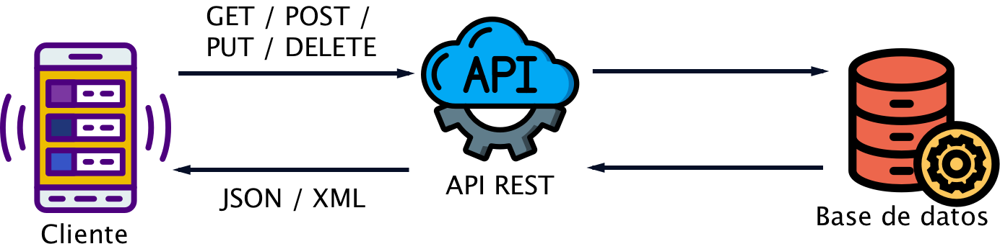
3.2. Métodos HTTP (GET, POST, PUT, DELETE)
Los métodos HTTP son utilizados para realizar operaciones en recursos en una API RESTful. Los métodos más comunes y sus principales usos son:
-
GET: Recupera información de un recurso específico. -
POST: Crea un nuevo recurso. -
PUT: Actualiza un recurso existente. -
DELETE: Elimina un recurso.
Cada uno de estos métodos tiene un propósito específico y se utiliza en diferentes situaciones para interactuar con los recursos de una API. Desde el punto de vista de bases de datos, cada uno lo podríamos hacer corresponder con una operación básica de SQL CRUD:
-
GET: Correspondería a una operaciónSELECTpara recuperar información de un recurso específico. -
POST: Correspondería a una operaciónINSERTpara crear un nuevo recurso. -
PUT: Correspondería a una operaciónUPDATEpara actualizar un recurso existente. -
DELETE: Correspondería a una operaciónDELETEpara eliminar un recurso.
3.3. Formatos de intercambio de datos (JSON, XML)
Los formatos de intercambio de datos son utilizados para representar la información que se envía y recibe a través de una API. Los dos formatos más comunes son JSON (JavaScript Object Notation) y XML (eXtensible Markup Language).
-
JSON: Es un formato ligero y fácil de leer que utiliza una sintaxis basada en objetos de JavaScript. Es ampliamente utilizado en APIs RESTful debido a su simplicidad y eficiencia.[ { "id": 1, "name": "Product 1", "price": 10.00 }, { "id": 2, "name": "Product 2", "price": 20.00 } ] -
XML: Es un formato más complejo que utiliza una sintaxis basada en etiquetas. Aunque es más pesado que JSON, es utilizado en algunas APIs debido a su capacidad para representar datos estructurados de manera más detallada.<products> <product> <id>1</id> <name>Product 1</name> <price>10.00</price> </product> <product> <id>2</id> <name>Product 2</name> <price>20.00</price> </product> </products>
3.4. Especificación de los endpoints de una API
Los endpoints de una API son las URLs a las que se envían las solicitudes para interactuar con los recursos de la API. Cada endpoint representa una operación específica que se puede realizar en un recurso. Como ejemplos de endpoints, se pueden mencionar:
-
GET /product: Recupera la lista de todos los productos. -
GET /product/{id}: Recupera la información de un producto específico. -
POST /product: Crea un nuevo producto. El producto se envía en el cuerpo de la solicitud, normalmente en formato JSON o XML.
A continuación se explican algunos aspectos importantes sobre cómo especificar los endpoints de una API.
3.4.1. Paso de parámetros en la URL
Los parámetros en la URL se utilizan para identificar recursos específicos o para pasar información adicional a la API. Los parámetros pueden ser parte de la ruta de la URL o pueden ser parámetros de consulta.
-
Parámetros en la ruta de la URL: Se utilizan para identificar recursos específicos. Por ejemplo, en la URL
http://api.example.com/product/1, el parámetro1identifica al prducto con ID 1. En la especificación de una API, esto se puede representar comoGET /product/{id}, donde se omite el nombre del servidor y sólo se especifica la ruta relativa al servidor. -
Parámetros de consulta: También conocidos como
QueryParams, se utilizan para pasar información adicional a la API. Por ejemplo, en la URLhttp://api.example.com/product?name=Product 1, el parámetro de consultaname=Product 1se utiliza para buscar productos con el nombre "Product 1". En la especificación de una API, esto se puede representar comoGET /product?name=<name>.
3.4.2. Envío de datos en peticiones POST y PUT
En las peticiones POST y PUT, los datos a añadir o a modificar, respectivamente, se envían en el cuerpo de la solicitud (body). Estos datos pueden estar en formato JSON, XML u otros formatos. A continuación se muestra un ejemplo del cuerpo en una petición POST utilizando JSON:
{
"name": "Product 1",
"price": 10.00
}La figura siguiente ilustra cómo especificar este cuerpo en una solicitud POST a través de Postman.
$$$ image::postman-post.png[]
|
La especificación del cuerpo se realiza en la pestaña |
En este ejemplo se envían los datos de un producto en formato JSON en el cuerpo de la solicitud POST. En la especificación de una API, esto se puede representar como POST /product.
En el caso de una petición PUT, se enviarían los datos de la misma forma, pero se utilizaría el método PUT en lugar de POST. En la especificación de una API, esto se puede representar como PUT /product/{id}.
|
Las peticiones |
3.4.3. Respuestas de la API
Las respuestas de una API RESTful pueden ser en formato JSON, XML u otros formatos. Es una buena práctica que las respuestas, además incluyan un código de estado HTTP que indica si la solicitud se ha completado correctamente o si ha habido algún error. Algunos códigos de estado HTTP comunes son:
-
200 OK: La solicitud se ha completado correctamente. -
201 Created: El recurso se ha creado correctamente. Se utiliza en respuestas a peticionesPOST. -
204 No Content: La solicitud se ha completado correctamente pero no se devuelve contenido en la respuesta. Se utiliza en respuestas a peticionesPUToDELETE. -
400 Bad Request: La solicitud no se ha podido procesar debido a un error en la solicitud. -
404 Not Found: El recurso solicitado no se ha encontrado. Esto debería entenderse un recurso que no se ha encontrado (p.e. un producto que no existe).
3.4.4. Ejemplo de endpoints de una API RESTful
A continuación se muestra un ejemplo de cómo se pueden especificar los endpoints básicos de una API RESTful para gestionar productos:
-
GET /product: Recupera la lista de todos los productos. -
GET /product/{id}: Recupera la información de un producto específico. -
POST /product: Crea un nuevo producto. -
PUT /product/{id}: Actualiza la información de un producto específico. -
DELETE /product/{id}: Elimina un producto específico.
En estos endpoints, {id} es un parámetro en la ruta de la URL que identifica al usuario específico.
|
En la especificación de los endpoints de una API normalmente no se incluye el nombre/dirección del servidor, ya que esto se especifica en la configuración del cliente. Sólo se especifica la ruta relativa al servidor. Por ejemplo, en lugar de |
3.5. Cabeceras (Content-Type, Authorization)
Las cabeceras HTTP son utilizadas para proporcionar información adicional sobre la solicitud o la respuesta. Algunas de las cabeceras más comunes son:
-
Content-Type: Especifica el formato de los datos en el cuerpo de la solicitud o la respuesta (p.e.application/jsonpara JSON). -
Authorization: Proporciona credenciales de autenticación para acceder a recursos protegidos (p.e.Bearer tokenpara autenticación basada en tokens).
Las cabeceras son importantes para asegurar que la solicitud y la respuesta sean interpretadas correctamente por el cliente y el servidor.
4. Configuración inicial del entorno de desarrollo
Para configurar el entorno de desarrollo de la API REST, utilizaremos Docker y Docker Compose. El archivo docker-compose.yml define los servicios necesarios para ejecutar la aplicación, incluyendo MySQL y un contenedor de Python para ejecutar la API REST. La figura siguiente muestra un diagrama de la arquitectura del entorno de desarrollo, incluyendo los servicios de Docker y cómo se comunican entre sí y con el host. Podemos ver que el contenedor de Python que ejecuta la API REST se comunica con el contenedor de MySQL para acceder a la base de datos, y que el host puede acceder a ambos servicios a través de los puertos expuestos. También se muestra cómo se utilizan los volúmenes para montar el código fuente de la API REST y los datos de MySQL en el contenedor, lo que facilita el desarrollo y la persistencia de los datos.
4.1. Preparación del entorno de desarrollo con Docker Compose
Docker Compose es una herramienta que permite definir y ejecutar aplicaciones Docker con múltiples contenedores. Con Docker Compose, se puede configurar el entorno de desarrollo de la API REST definiendo los servicios necesarios en un archivo docker-compose.yml. Este archivo especifica cómo se deben construir y ejecutar los contenedores de Docker para la aplicación, incluyendo las dependencias entre los servicios, los volúmenes para persistencia de datos y el mapeo de puertos para acceder a los servicios desde el host. Comencemos con un archivo docker-compose.yml básico, que por ahora define únicamente los servicios de MySQL y Python para la API REST. Este archivo lo situaremos en una carpeta denominada setup-environment que se encuentra en la raíz del proyecto y se utiliza para configurar y ejecutar los contenedores de Docker necesarios para la aplicación.
|
Posteriormente añadiremos un tercer servicio para ejecutar una aplicación que interactúe con la API REST, que se desarrollará utilizando el framework de Python Streamlit. Este servicio se encargará de ejecutar una aplicación web que permita a los usuarios interactuar con la API REST de manera visual e intuitiva, facilitando la consulta de productos, categorías y valoraciones, así como la gestión de usuarios y productos. La aplicación Streamlit se desarrollará en la carpeta |
setup-environment/docker-compose.ymlservices:
mysql:
container_name: mysql
image: mysql:8.0
restart: always
ports:
- 3306:3306 (1)
volumes:
- "../data/mysql-data:/var/lib/mysql" (2)
environment: (3)
MYSQL_ROOT_PASSWORD: "${MYSQL_ROOT_PASSWORD}"
MYSQL_DATABASE: "${MYSQL_DATABASE}"
MYSQL_USER: "${MYSQL_USER}"
MYSQL_PASSWORD: "${MYSQL_PASSWORD}"
healthcheck:
test: (4)
[
"CMD",
"mysqladmin",
"ping",
"-h",
"localhost",
"-u",
"root",
"-p${MYSQL_ROOT_PASSWORD}",
]
interval: 10s
timeout: 5s
retries: 5
python:
depends_on:
mysql:
condition: service_healthy (5)
build:
context: .
dockerfile: Dockerfile (6)
volumes:
- "../api:/app" (7)
ports:
- "8000:8000" (8)| 1 | Expone el puerto 3306 del contenedor de MySQL para que pueda ser accedido desde el host o desde otros contenedores. |
| 2 | Utiliza un volumen para almacenar los datos de la base de datos, mapeando el directorio data/mysql-data del host al directorio /var/lib/mysql en el contenedor. Esto asegura que los datos de la base de datos se mantengan persistentes incluso si el contenedor se detiene o se elimina. |
| 3 | Define las variables de entorno necesarias para configurar MySQL, como el nombre de usuario, la contraseña y la base de datos iniciales. |
| 4 | Configura un healthcheck para el servicio de MySQL, que verifica periódicamente si el servicio está listo para aceptar conexiones. Esto es importante para asegurar que el contenedor de Python que ejecuta la API REST no intente conectarse a MySQL antes de que esté listo. |
| 5 | Configura el servicio de Python para que dependa del servicio de MySQL y espere a que el servicio de MySQL esté preparado antes de iniciar. |
| 6 | Especifica el contexto de construcción y el archivo Dockerfile para construir la imagen del contenedor de Python. El contexto representa el directorio actual, y el Dockerfile se encuentra en la misma carpeta setup-environment. |
| 7 | Monta la carpeta api del host en el directorio /app del contenedor de Python. Esto permite que los cambios realizados en el código fuente de la API REST se reflejen inmediatamente en el contenedor sin necesidad de reconstruir la imagen. Esto es especialmente útil durante la fase de desarrollo, ya que permite iterar rápidamente y ver los cambios sin tener que esperar a que se reconstruya la imagen de Docker cada vez que se realiza una modificación en el código. |
| 8 | Expone el puerto 8000 del contenedor de Python para que la API REST pueda ser accedida desde el host o desde otros contenedores. |
|
Al estar usando un volumen en nuestro host para almacenar el código de la aplicación y que esté mapeado en el contenedor, podemos editar el código fuente de la API REST en nuestro equipo, mientras que el contenedor se encarga de facilitar la ejecución de la aplicación con todas las dependencias necesarias. Esto facilita enormemente el proceso de desarrollo y mejora la productividad, ya que no es necesario reconstruir la imagen de Docker cada vez que se realiza un cambio en el código. Además, al estar ejecutando uvicorn en modo de recarga automática ( |
Se utiliza un archivo .env para definir las variables de entorno necesarias para la configuración de MySQL. Este archivo lo situamos en la misma carpeta setup-environment que el archivo docker-compose.yml. A continuación se muestra un ejemplo del contenido del archivo .env con las variables de entorno necesarias para configurar MySQL:
setup-environment/.envMYSQL_USER=example
MYSQL_PASSWORD=example
MYSQL_HOST=mysql
MYSQL_PORT=3306
MYSQL_DATABASE=mydatabase|
Es una práctica común no incluir el archivo |
Este entorno inicial de desarrollo incluye dos servicios:
-
mysql: Servicio de bases de datos relacional que se utiliza para almacenar los usuarios, productos, categorías y valoraciones. Se expone con el nombre
mysqlen el puerto 3306 y utiliza un volumen para almacenar los datos de la base de datos que mapea el directoriodata/mysql-dataal directorio/var/lib/mysqlen el contenedor. Mediante el uso de variables de entorno, se configura con un nombre de usuario, una contraseña y una base de datos iniciales para la autenticación y el acceso a los datos. -
python: Contenedor de Python para ejecutar la API REST. Se construye a partir de un archivo
Dockerfile,que instala las dependencias necesarias y expone el puerto 8000. Las dependencias se definen en un archivorequirements.txtque se copia al contenedor durante la construcción. Para poder desarrollar la API REST de manera eficiente, se monta la carpeta de la aplicación en el contenedor para facilitar el desarrollo. Esto permite que los cambios realizados en el código fuente de la aplicación se reflejen inmediatamente en el contenedor sin necesidad de reconstruir la imagen.
|
Una técnica muy utilizada en el desarrollo con Docker consiste en montar una carpeta del host en el contenedor para facilitar el desarrollo. En esta carpeta se va creando el código fuente de la aplicación, y al montarla en el contenedor, los cambios realizados en el código fuente se reflejan inmediatamente en el contenedor sin necesidad de reconstruir la imagen. Esto es especialmente útil durante la fase de desarrollo, ya que permite iterar rápidamente y ver los cambios sin tener que esperar a que se reconstruya la imagen de Docker cada vez que se realiza una modificación en el código. Así, el código está a salvo en el host y se puede editar con cualquier editor de texto o IDE, mientras que el contenedor se encarga de facilitar la ejecución de la aplicación con todas las dependencias necesarias. Esto facilita enormemente el proceso de desarrollo y mejora de la productividad. En el repositorio no sólo incluimos el código fuente de la API REST, sino también el entorno de desarrollo con Docker y Docker Compose para que los desarrolladores puedan configurar fácilmente su entorno y comenzar a trabajar en la API REST sin complicaciones. Esto evita tener que instalar en el host, lo que a veces contamina el entorno o lo hace incompatible con otras aplicaciones. Además, al usar Docker, se garantiza que el entorno de desarrollo sea consistente en diferentes máquinas y sistemas operativos, lo que facilita la colaboración entre desarrolladores y la implementación en producción. |
Usaremos un archivo Dockerfile para construir el contenedor de Python con las dependencias necesarias para ejecutar la API REST. A continuación se muestra el contenido del archivo Dockerfile:
setup-environment/DockerfileFROM python:3.11-slim
WORKDIR /app
ENV PYTHONPATH=/app
COPY ./requirements.txt /tmp/requirements.txt
RUN pip install -r /tmp/requirements.txt
COPY ../ ./
EXPOSE 8000
CMD [ "uvicorn", "main:app", "--host", "0.0.0.0", "--port", "8000", "--reload" ]Como archivo de requisitos, se utiliza requirements.txt para instalar las dependencias necesarias para la API REST. A continuación se muestra el contenido del archivo requirements.txt:
fastapi==0.136.1 # Framework para construir APIs REST
uvicorn==0.44.0 # Servidor ASGI para ejecutar aplicaciones FastAPI
mysql-connector-python==9.6.0 # Conector de MySQL para Python
dotenv==0.9.9 # Carga de variables de entorno desde un archivo .env
pydantic==2.13.3 # Biblioteca de validación de datos y serialización de objetos
pytz==2026.1 # Biblioteca para manejar zonas horarias4.2. Servicios
-
mysql: Servicio de bases de datos relacional que se utiliza para almacenar los usuarios, productos, categorías y valoraciones. Se expone con el nombre
mysqlen el puerto 3306 y utiliza un volumen para almacenar los datos de la base de datos que mapea el directoriodata/mysql-dataal directorio/var/lib/mysqlen el contenedor. Se configura con un nombre de usuario, una contraseña y una base de datos iniciales para la autenticación y el acceso a los datos. -
python: Contenedor de Python para ejecutar la API REST. Se construye a partir de un archivo
Dockerfile,que instala las dependencias necesarias y expone el puerto 8000. Se monta la carpeta de la aplicación en el contenedor para facilitar el desarrollo.
4.3. FastAPI
FastAPI es un framework moderno y de alto rendimiento para construir una APIs REST utilizando Python. Está diseñado para ser fácil de usar, rápido y eficiente, aprovechando las características más recientes de Python, como las anotaciones de tipo (type hints). Algunas de sus características principales incluyen:
-
Alto rendimiento: Basado en Starlette y Pydantic, lo que lo hace extremadamente rápido.
-
Validación automática: Utiliza las anotaciones de tipo para validar automáticamente las entradas y salidas.
-
Documentación automática: Genera automáticamente documentación interactiva para las APIs. Genera documentación Swagger y ReDoc.
-
Asincronía: Soporta programación asíncrona con
asyncyawait.
4.4. Swagger y ReDoc
Swagger y ReDoc son herramientas de documentación de APIs que permiten visualizar y probar las rutas de la API de forma interactiva. FastAPI genera automáticamente documentación interactiva para las APIs en formato Swagger y ReDoc. La documentación se genera automáticamente a partir de las anotaciones de tipo y los esquemas definidos en el código. Los esquemas de datos se utilizan para validar las entradas y salidas de las rutas de la API y los definiremos utilizando Pydantic. Pydantic es una biblioteca de validación de datos y serialización de objetos que se integra perfectamente con FastAPI.
La documentación Swagger generada está disponible en la ruta /docs de la aplicación FastAPI. Es posible cambiar el título y la descripción de la documentación de Swagger utilizando los parámetros title y description al crear la aplicación FastAPI. Esto lo veremos más adelante cuando comencemos con el desarrollo.
Por otro lado, ReDoc es otra herramienta de documentación que presenta las rutas de la API de manera más estructurada y profesional. Está disponible en la ruta /redoc.
Ambas herramientas son generadas automáticamente por FastAPI a partir de las anotaciones de tipo y los esquemas definidos en el código. Esto elimina la necesidad de escribir documentación manualmente y asegura que siempre esté sincronizada con la implementación de la API.
4.5. Organización del código
Para mantener el código organizado y facilitar el desarrollo, se recomienda dividir la aplicación en módulos y archivos separados. En FastAPI, se pueden definir las rutas y la lógica de negocio en módulos separados, y luego importarlos en el archivo principal de la aplicación. Esto facilita la gestión de rutas y la escalabilidad de la aplicación. A continuación se muestra una propuesta de organización de código en FastAPI.
FastAPIMySQLAPIProductosValoraciones/
│
├── __init__.py # Archivo de inicialización. Puede estar vacío. Permite que Python trate el directorio como un paquete.
├── .env # Archivo de variables de entorno
├── .env.example # Archivo de ejemplo de variables de entorno
├── create_data.sh # Script con llamadas a la API para la inicialización de la base de datos
├── database.py # Configuración de la base de datos
├── init_db.py # Script para inicializar la base de datos
├── main.py # Archivo principal de la aplicación
├── models.py # Definición de modelos Pydantic
├── routes/ # Directorio de rutas
│ ├── base.py # Rutas básicas (raíz, salud, etc.)
│ ├── categories.py # Rutas para categorías
│ ├── products.py # Rutas para productos
│ ├── reviews.py # Rutas para valoraciones
│ ├── users.py # Rutas para usuarios4.6. El archivo main.py básico
Para comenzar nuestra API desde cero, crearemos un archivo main.py con el siguiente código. Este archivo es el punto de entrada de la aplicación FastAPI y define la aplicación y una ruta de prueba para verificar que la API está funcionando correctamente. Por ahora, este archivo sólo contiene la definición de la aplicación FastAPI con una descripción personalizada.
./api/main.pyfrom fastapi import FastAPI
app = FastAPI(
title="Products API",
description="API for managing products using FastAPI and MySQL",
version="1.0.0"
)4.7. Creación de las rutas básicas de prueba
Antes de pasar a la implementación de la lógica de negocio y la interacción con la base de datos, vamos a crear algunas rutas básicas de prueba para asegurarnos de que la API REST está funcionando correctamente. Estas rutas se pueden utilizar para verificar que el servidor está respondiendo a las solicitudes y que la configuración inicial es correcta.
Organizaremos todas nuestras rutas en archivos separados dentro de una carpeta routers para mantener el código organizado. Para comenzar, crearemos un archivo routers/base.py con el siguiente código, que define una ruta de prueba para verificar que la API REST está funcionando correctamente.
./api/routers/base.pyfrom fastapi import APIRouter
router = APIRouter()
# Define a test API endpoint
@router.get("/health", status_code=status.HTTP_200_OK) (1)
async def health_check(): (2)
return {"status": "ok"} (3)| 1 | Define una ruta GET en el router con la ruta /health que se utilizará para verificar el estado de la API REST. Se especifica un código de estado HTTP 200 OK para indicar que la solicitud se ha procesado correctamente. |
| 2 | Define una función asíncrona health_check que se ejecutará cuando se realice una solicitud GET a la ruta /health. |
| 3 | Devuelve un diccionario JSON con el estado de la API REST, indicando que está funcionando correctamente. |
|
Es conveniente definir rutas de prueba como esta para verificar que la configuración inicial de la API REST es correcta y que el servidor está respondiendo a las solicitudes. Esto es especialmente útil durante la fase de desarrollo, ya que permite asegurarse de que la aplicación está funcionando correctamente antes de implementar la lógica de negocio y la interacción con la base de datos. Además, estas rutas de prueba pueden ser utilizadas para realizar pruebas automatizadas y monitorizar el estado de la API REST en producción. |
Luego, en el archivo main.py, importamos el router definido en routers/base.py y lo incluimos en la aplicación FastAPI para que la ruta de prueba esté disponible. A continuación se muestra el código actualizado del archivo main.py con la inclusión del router:
./api/main.py# from routes import base
from fastapi import FastAPI
from routes import base (1)
# Initialize FastAPI app
app = FastAPI(
title="Products API",
description="API for managing products using FastAPI and MySQL",
version="1.0.0"
)
app.include_router(base.router) (2)| 1 | Importa el router definido en routers/base.py para que las rutas definidas en ese archivo estén disponibles en la aplicación FastAPI. |
| 2 | Incluye el router en la aplicación FastAPI utilizando el método include_router. Esto hace que las rutas definidas en routers/base.py estén disponibles en la API REST, lo que permite acceder a la ruta de prueba /health para verificar que la API está funcionando correctamente. |
Si ejecutamos el entorno de desarrollo con Docker Compose y accedemos a http://localhost:8000/health, deberíamos recibir una respuesta JSON con el estado de la API REST, indicando que está funcionando correctamente. Esto confirma que la configuración inicial del entorno de desarrollo es correcta y que la API REST está respondiendo a las solicitudes.
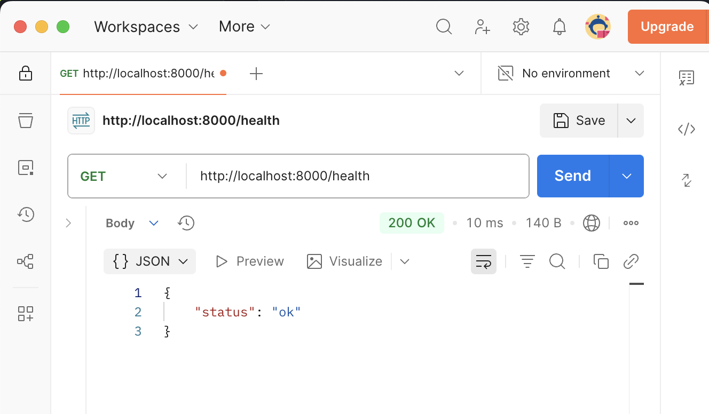
4.8. HATEOAS
HATEOAS (Hypermedia as the Engine of Application State) es un principio de diseño de APIs REST que sugiere que las respuestas de la API no deben incluir sólo datos, sino también enlaces a otros recursos relacionados, lo que permite a los clientes navegar por la API de manera dinámica y descubrir nuevas funcionalidades sin necesidad de conocer previamente la estructura de la API. En este tutorial, se realizará una implementación muy básica de HATEOAS en la API REST para proporcionar enlaces a recursos relacionados en las respuestas de la API. Esto mejorará la experiencia del usuario al permitir una navegación más intuitiva y facilitará la exploración de la API sin necesidad de consultar la documentación para conocer las rutas disponibles.
Para ello, definiremos en la ruta raíz (/) un endpoint que devuelva un mensaje de bienvenida junto con enlaces a los recursos principales de la API REST. Más adelante, a medida que implementemos los endpoints para gestionar usuarios, productos, categorías y valoraciones, también incluiremos enlaces a recursos relacionados en las respuestas de esos endpoints para seguir el principio de HATEOAS. Esto permitirá a los clientes descubrir fácilmente cómo interactuar con la API REST y navegar por los diferentes recursos disponibles.
A continuación se muestra un ejemplo de cómo implementar mínimamente HATEOAS en la ruta raíz de la API REST:
./api/routers/base.pyfrom fastapi import APIRouter, status, Request (1)
router = APIRouter()
# Define the root endpoint with HATEOAS links
@router.get("/") (2)
async def root(request: Request):
base = str(request.base_url).rstrip("/") (3)
return {
"message": "Welcome to Products API",
"_links": {
"self": f"{base}/",
"health": f"{base}/health",
"docs": f"{base}/docs",
"redoc": f"{base}/redoc",
"openapi": f"{base}/openapi.json",
}
}
# Define a test API endpoint
@router.get("/health", status_code=status.HTTP_200_OK)
async def health_check():
return {"status": "ok"}| 1 | Importa la clase Request de FastAPI para poder acceder a la información de la solicitud, como la URL base. |
| 2 | Define una ruta GET en el router con la ruta raíz (/) que se utilizará para proporcionar un mensaje de bienvenida junto con enlaces a recursos relacionados. |
| 3 | Obtiene la URL base de la solicitud utilizando request.base_url y elimina cualquier barra diagonal al final para construir los enlaces correctamente. |
En la respuesta de esta ruta raíz, se incluye un mensaje de bienvenida y un diccionario _links que contiene enlaces a recursos relacionados, como:
-
la ruta de salud (
/health) -
la documentación de Swagger (
/docs) -
la documentación de Redoc (
/redoc) -
el esquema OpenAPI (
/openapi.json)
Esto permite a los clientes descubrir fácilmente cómo interactuar con la API REST y navegar por los diferentes recursos disponibles sin necesidad de consultar la documentación para conocer las rutas disponibles. Así se mostraría la respuesta JSON al acceder a la ruta raíz (/):
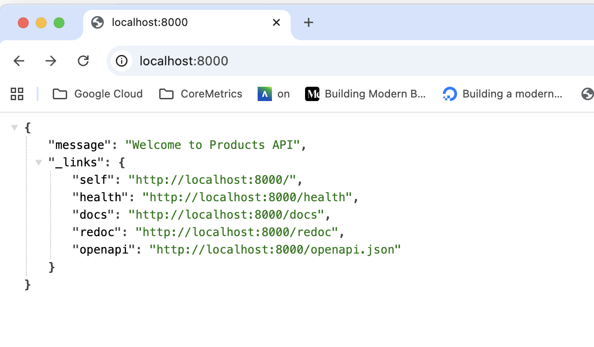
Ahora podemos ir navegando por la API REST utilizando los enlaces proporcionados en la respuesta de la ruta raíz, lo que facilita la exploración de la API y mejora la experiencia del usuario al interactuar con la API REST. Por ejemplo, al hacer clic sobre el enlace de Swagger (/docs), se accederá a la documentación interactiva de la API REST, donde se pueden probar los diferentes endpoints y ver cómo funcionan. De esta manera, se sigue el principio de HATEOAS al proporcionar enlaces a recursos relacionados en las respuestas de la API REST, lo que permite a los clientes navegar por la API de manera dinámica y descubrir nuevas funcionalidades sin necesidad de conocer previamente la estructura de la API.
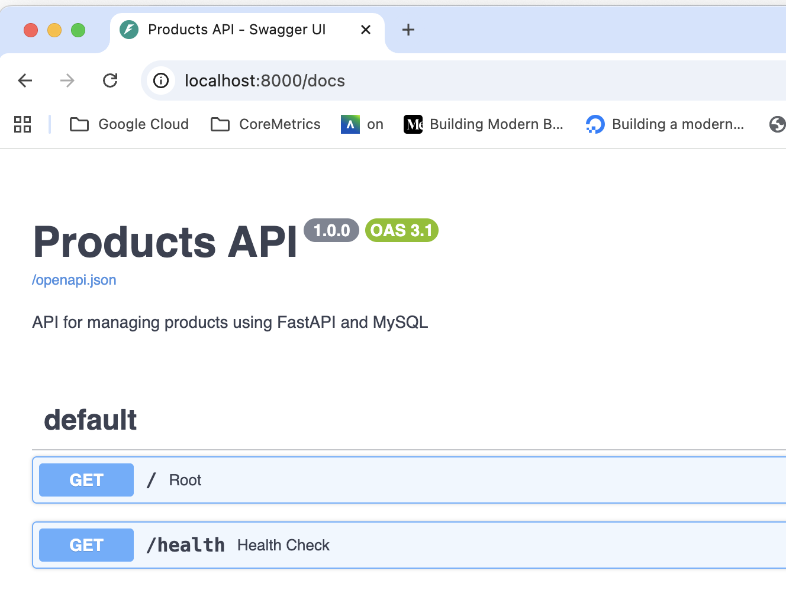
Igualmente, al hacer clic sobre el enlace de Redoc (/redoc), se accederá a otra versión de la documentación de la API REST con un formato diferente, lo que ofrece a los usuarios una experiencia de navegación más rica y variada.

Esto demuestra cómo la implementación de HATEOAS en la API REST mejora la experiencia del usuario al permitir una navegación más intuitiva y facilitar la exploración de la API sin necesidad de consultar la documentación para conocer las rutas disponibles.
5. Configuración de la base de datos MySQL
Una vez configurado el entorno de desarrollo, el siguiente paso es preparar la base de datos para que podamos almacenar los datos de usuarios, productos, categorías y valoraciones. Esto implica preparar la conexión a la base de datos MySQL desde la API REST y crear las tablas necesarias para almacenar los datos. En esta sección se muestra cómo configurar la conexión a MySQL utilizando un pool de conexiones y cómo crear las tablas necesarias para la API REST.
5.1. Conexión a la base de datos MySQL
Para conectar la API REST a la base de datos MySQL, se puede utilizar el conector de MySQL para Python. Esto permite interactuar con la base de datos MySQL directamente desde el código Python. Sin embargo, para mejorar el rendimiento y la eficiencia en la gestión de conexiones a la base de datos, es recomendable utilizar un pool de conexiones. A continuación se muestra un ejemplo de cómo configurar la conexión a MySQL utilizando un pool de conexiones. Este código se puede colocar en un archivo database.py que se encargue de gestionar la conexión a MySQL y proporcionar una función para obtener una conexión desde el pool.
|
Un pool de conexiones es una técnica que permite reutilizar conexiones a la base de datos en lugar de abrir y cerrar una conexión cada vez que se realiza una consulta. Esto reduce la sobrecarga asociada con la creación y destrucción de conexiones, lo que mejora el rendimiento de la aplicación. |
./api/database.pyimport mysql.connector
from mysql.connector import pooling
import os
from dotenv import load_dotenv
load_dotenv() (1)
_DB_HOST = os.environ.get('MYSQL_HOST') (2)
_DB_PORT = int(os.getenv("MYSQL_PORT", 3306))
_DB_USER = os.environ.get('MYSQL_USER')
_DB_PASSWORD = os.environ.get('MYSQL_PASSWORD')
_DB_NAME = os.environ.get('MYSQL_DATABASE', 'mydatabase')
# Ensure the database exists before creating the pool (needed on fresh volumes)
_tmp = mysql.connector.connect( (3)
host=_DB_HOST,
port=_DB_PORT,
user=_DB_USER,
password=_DB_PASSWORD,
)
_tmp.cursor().execute(f"CREATE DATABASE IF NOT EXISTS `{_DB_NAME}`") (4)
_tmp.close() (5)
_pool = pooling.MySQLConnectionPool( (6)
pool_name="main_pool",
pool_size=5,
host=_DB_HOST,
port=_DB_PORT,
user=_DB_USER,
password=_DB_PASSWORD,
database=_DB_NAME,
)
def get_connection(): (7)
return _pool.get_connection()
def get_db(): (8)
conn = _pool.get_connection()
try:
yield conn
finally:
conn.close()| 1 | Carga las variables de entorno desde el archivo .env utilizando la biblioteca dotenv. |
| 2 | Obtiene las variables de entorno necesarias para configurar la conexión a MySQL, como el host, el puerto, el usuario, la contraseña y el nombre de la base de datos. |
| 3 | Establece una conexión temporal a MySQL para asegurarse de que la base de datos existe antes de crear el pool de conexiones. Esto es necesario en caso de que se esté utilizando un volumen nuevo para MySQL que no tenga la base de datos creada. |
| 4 | Ejecuta una sentencia SQL para crear la base de datos si no existe. Esto garantiza que la base de datos esté disponible para el pool de conexiones. |
| 5 | Cierra la conexión temporal después de asegurarse de que la base de datos existe. |
| 6 | Configura el pool de conexiones a MySQL utilizando las variables de entorno para la configuración de la conexión. |
| 7 | Define una función get_connection que devuelve una conexión del pool de conexiones. |
| 8 | Define una función get_db que se puede utilizar como dependencia en las rutas de FastAPI para obtener una conexión a la base de datos. Esta función utiliza un generador para asegurar que la conexión se cierre correctamente después de su uso. |
|
Un generador es una función que permite iterar sobre un conjunto de valores utilizando la palabra clave |
5.2. Inicialización de la base de datos
El ejemplo que vamos a usar a lo largo del tutorial es una base de datos para gestionar productos y valoraciones en un entorno de comercio electrónico. Los productos se organizan en categorías, y los usuarios pueden dejar valoraciones y comentarios sobre los productos. La figura siguiente muestra en formato PlantUML el esquema de la base de datos que vamos a utilizar para almacenar los datos de usuarios, productos, categorías y valoraciones.
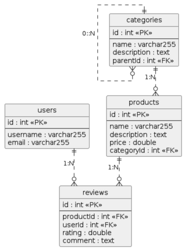
@startuml
hide circle
hide methods
skinparam linetype ortho
class "users" {
id : int <<PK>>
--
username : varchar255
email : varchar255
}
class "categories" {
id : int <<PK>>
--
name : varchar255
description : text
parentId : int <<FK>>
}
class "products" {
id : int <<PK>>
--
name : varchar255
description : text
price : double
categoryId : int <<FK>>
}
class "reviews" {
id : int <<PK>>
--
productId : int <<FK>>
userId : int <<FK>>
rating : double
comment : text
}
users ||..o{ reviews : "1:N"
categories ||..o{ products : "1:N"
categories ||..o{ categories: "0::N"
products ||..o{ reviews : "1:N"
@endumlA continuación se muestra el código para crear las tablas users, categories, products y reviews en la base de datos MySQL utilizando sentencias SQL. Colocaremos este código en un archivo 'init_db.py' que se encargue de la inicialización de la base de datos. Este código se ejecutará al inicio de la aplicación para asegurarse de que las tablas necesarias estén creadas en la base de datos antes de que se realicen operaciones sobre ellas.
./api/init_db.pyfrom database import get_connection
import logging
logger = logging.getLogger("uvicorn") (1)
# Create tables if they don't exist (plain DDL, no ORM)
CREATE_TABLES_SQL = [ (2)
"""
CREATE TABLE IF NOT EXISTS users (
id INT AUTO_INCREMENT PRIMARY KEY,
username VARCHAR(255) NOT NULL UNIQUE,
email VARCHAR(255) NOT NULL UNIQUE
)
""",
"""
CREATE TABLE IF NOT EXISTS categories (
id INT AUTO_INCREMENT PRIMARY KEY,
name VARCHAR(255) NOT NULL,
description TEXT,
parentId INT, (3)
FOREIGN KEY (parentId) REFERENCES categories(id) ON DELETE SET NULL (4)
)
""",
"""
CREATE TABLE IF NOT EXISTS products (
id INT AUTO_INCREMENT PRIMARY KEY,
name VARCHAR(255) NOT NULL,
description TEXT,
price DOUBLE NOT NULL,
categoryId INT, (5)
FOREIGN KEY (categoryId) REFERENCES categories(id) ON DELETE SET NULL (6)
)
""",
"""
CREATE TABLE IF NOT EXISTS reviews (
id INT AUTO_INCREMENT PRIMARY KEY,
productId INT NOT NULL,
userId INT NOT NULL,
rating DOUBLE NOT NULL,
comment TEXT,
FOREIGN KEY (productId) REFERENCES products(id) ON DELETE CASCADE, (7)
FOREIGN KEY (userId) REFERENCES users(id) ON DELETE RESTRICT (8)
)
""",
]
# Initialize database tables
def create_tables(): (9)
conn = get_connection() (10)
try:
cursor = conn.cursor() (11)
for sql in CREATE_TABLES_SQL: (12)
cursor.execute(sql) (13)
conn.commit() (14)
logger.info("Tablas creadas/verificadas correctamente") (15)
except Exception:
logger.exception("Error al crear tablas") (16)
raise (17)
finally:
conn.close() (18)| 1 | Configura un logger para registrar información sobre la creación de tablas y posibles errores. |
| 2 | Define las sentencias SQL para crear las tablas users, categories, products y reviews si no existen. Estas tablas incluyen claves foráneas para establecer relaciones entre usuarios, productos, categorías y valoraciones. |
| 3 | parentId es una clave foránea que permite establecer una relación jerárquica entre categorías, donde una categoría puede tener una categoría padre. Admite valores nulos para permitir categorías sin padre (categorías raíz). |
| 4 | Se especifica que si se elimina una categoría padre, el valor de parentId en las categorías hijas se establecerá en NULL, lo que evita la eliminación en cascada de las categorías hijas. |
| 5 | categoryId es una clave foránea que hace referencia a la tabla categories. Admite valores nulos para permitir productos sin categoría asignada. |
| 6 | Se especifica que si se elimina una categoría, el valor de categoryId en los productos asociados se establecerá en NULL, lo que evita la eliminación en cascada de los productos. |
| 7 | Se especifica que si se elimina un producto, todas las valoraciones asociadas a ese producto se eliminarán en cascada, lo que garantiza la integridad referencial entre productos y valoraciones. |
| 8 | Se especifica que si se intenta eliminar un usuario que tiene valoraciones asociadas, la eliminación será restringida, lo que evita la eliminación de usuarios que tienen valoraciones en la base de datos y garantiza la integridad referencial entre usuarios y valoraciones |
| 9 | Define una función create_tables que se encargue de ejecutar las sentencias SQL para crear las tablas en la base de datos. |
| 10 | Obtiene una conexión a la base de datos utilizando la función get_connection definida anteriormente. |
| 11 | Crea un cursor para ejecutar las sentencias SQL. |
| 12 | Itera sobre las sentencias SQL definidas en CREATE_TABLES_SQL y las ejecuta utilizando el cursor. |
| 13 | Ejecuta cada sentencia SQL para crear las tablas en la base de datos. |
| 14 | Realiza un commit para guardar los cambios en la base de datos después de ejecutar las sentencias SQL. |
| 15 | Registra un mensaje de información indicando que las tablas se han creado o verificado correctamente. |
| 16 | Si ocurre una excepción durante la creación de las tablas, se registra un mensaje de error con la información de la excepción. |
| 17 | Se vuelve a lanzar la excepción para que pueda ser manejada por el código que llama a esta función. |
| 18 | Finalmente, se cierra la conexión a la base de datos para liberar los recursos. |
|
Un logger es una herramienta que permite registrar mensajes de información, advertencia y error en una aplicación. En este caso, se utiliza el logger de Uvicorn para registrar mensajes relacionados con la creación de tablas en la base de datos. Esto es útil para monitorear el proceso de inicialización de la base de datos y detectar posibles problemas. Es preferible utilizar un logger en lugar de imprimir mensajes directamente en la consola, ya que los loggers ofrecen más flexibilidad y opciones de configuración para el manejo de mensajes. Además, los loggers permiten registrar mensajes en diferentes niveles (info, warning, error) y pueden configurarse para escribir los mensajes en archivos de log o enviarlos a sistemas de monitorización, lo que facilita la gestión y el análisis de los registros de la aplicación. |
|
Un cursor es un objeto que se utiliza para ejecutar sentencias SQL y recuperar resultados de la base de datos. En este caso, se crea un cursor a partir de la conexión a la base de datos para ejecutar las sentencias SQL definidas en |
Ahora, ya sólo queda ejecutar la función create_tables al inicio de la aplicación para asegurarnos de que las tablas necesarias estén creadas en la base de datos antes de que se realicen operaciones sobre ellas. Para ello, podemos importar la función create_tables en el archivo main.py y llamarla al inicio de la aplicación. A continuación se muestra el código actualizado del archivo main.py con la llamada a la función create_tables:
./api/main.py# from routes import base
from fastapi import FastAPI
from routes import base
from init_db import create_tables (1)
# Initialize FastAPI app
app = FastAPI(
title="Products API",
description="API for managing products using FastAPI and MySQL",
version="1.0.0"
)
@app.on_event("startup") (2)
def startup():
create_tables() (3)
app.include_router(base.router)| 1 | Importa la función create_tables desde el módulo init_db para que pueda ser llamada al inicio de la aplicación. |
| 2 | Utiliza el decorador @app.on_event("startup") para registrar una función que se ejecutará automáticamente cuando la aplicación FastAPI se inicie. Esto asegura que la función create_tables se ejecute cada vez que se inicie la aplicación, lo que garantiza que las tablas necesarias estén creadas en la base de datos antes de que se realicen operaciones sobre ellas. |
| 3 | Llama a la función create_tables dentro de la función de inicio para crear las tablas en la base de datos si no existen. Esto asegura que la base de datos esté preparada para almacenar los datos de usuarios, productos, categorías y valoraciones que se gestionarán a través |
Si ahora lanzamos una petición a la raíz de la API REST en http://localhost:8000, se ejecutará el código de inicialización de la base de datos y se crearán las tablas users, categories, products y reviews si no existen. Esto asegura que la base de datos esté preparada para almacenar los datos de usuarios, productos, categorías y valoraciones que se gestionarán a través de la API REST. Una vez lanzada esta petición, podemos abrir una sesión en MySQL o utilizar una herramienta como MySQL Workbench para verificar que las tablas se han creado correctamente en la base de datos. Usaremos las credenciales definidas en el archivo .env para conectarnos a la base de datos MySQL y verificar que las tablas users, categories, products y reviews han sido creadas correctamente. Al abrir la conexión a la base de datos, deberíamos ver estas tablas listadas en el esquema de la base de datos, lo que confirma que la inicialización de la base de datos se ha realizado correctamente.
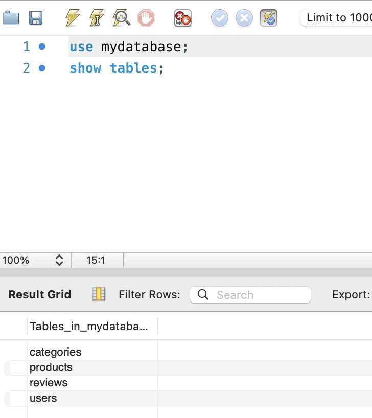
6. Desarrollo de la API
En esta sección vamos a crear la API REST para gestionar usuarios, productos, categorías y valoraciones utilizando el framework FastAPI y MySQL. Seguiremos un enfoque incremental, comenzando con la configuración general y luego desarrollando cada endpoint paso a paso. Antes, vamos a describir los endpoints disponibles en la API REST.
6.1. Especificación de los endpoints de la API
Los endpoints representan las rutas a las que los clientes pueden enviar solicitudes para interactuar con la API REST. A continuación se muestra una descripción de los endpoints disponibles en la API REST para gestionar usuarios, productos, categorías y valoraciones:
-
Usuarios
-
POST /api/users: Crear un nuevo usuario. -
GET /api/users: Obtener todos los usuarios. Parámetros opcionales de filtrado:usernameyemail -
GET /api/users/{id}: Obtener un usuario por ID. -
PUT /api/users/{id}: Actualizar un usuario por ID. -
DELETE /api/users/{id}: Eliminar un usuario por ID. También se eliminan las valoraciones asociadas.
-
-
Productos
-
POST /api/products: Crear un nuevo producto. -
GET /api/products: Obtener todos los productos. Parámetros opcionales de filtrado:categoryIdyname -
GET /api/products/{id}: Obtener un producto por ID. -
PUT /api/products/{id}: Actualizar un producto por ID. -
DELETE /api/products/{id}: Eliminar un producto por ID. También se eliminan los comentarios asociados.
-
-
Categorías
-
POST /api/categories: Crear una nueva categoría. -
GET /api/categories: Obtener todas las categorías. -
GET /api/categories/{id}: Obtener una categoría por ID. -
PUT /api/categories/{id}: Actualizar una categoría por ID. -
DELETE /api/categories/{id}: Eliminar una categoría por ID.
-
-
Comentarios
-
POST /api/reviews: Añadir un comentario a un producto. -
GET /api/reviews: Obtener todos los comentarios. Parámetros opcionales de filtrado:productIdyuserId -
PUT /api/reviews/{id}: Actualizar un comentario (solo por el usuario que lo creó). -
DELETE /api/reviews/{id}: Eliminar un comentario por ID (solo por el usuario que lo creó).
-
6.1.1. Ejemplo de JSON de un usuario
{
"username": "ursula",
"email": "ursula@acme.com"
}6.1.2. Ejemplo de JSON de una categoría
{
"name": "Electronics",
"description": "Dispositivos electrónicos",
"parentId": null
}6.1.3. Ejemplo de JSON de un producto
{
"name": "Laptop Dell",
"description": "Laptop potente para trabajo",
"price": 1200.0,
"categoryId": "1"
}6.1.4. Ejemplo de JSON de un comentario
{
"rating": 5,
"comment": "Excelente laptop, muy rápida",
"productId": 1,
"userId": 1
}6.2. Clases Pydantic para modelos de datos
Los modelos de datos representan la estructura de los datos que se manejan en la API REST. Esto es, los modelos de datos definen cómo se representan los usuarios, productos, categorías y valoraciones en la API REST. Esto es importante para validar los datos de entrada y salida de las rutas de la API, asegurando que los datos cumplen con la estructura esperada y facilitando la generación automática de documentación a través de Swagger. En FastAPI, se utiliza Pydantic, una biblioteca de validación de datos que permite definir modelos de datos utilizando clases de Python. FastAPI utiliza estas
clases Pydantic para definir los modelos de datos, lo que permite validar automáticamente los datos de entrada y salida de las rutas de la API. Por ejemplo, el modelo Product se utiliza para validar los datos de un producto y el modelo ProductResponse se utiliza para devolver los datos de un producto con su ID. Para definir las clases usaremos la especificación de los JSON que se ha hecho en la sección Especificación de los endpoints de la API. Definiremos también clases de respuesta para los modelos de datos, que incluyen el ID generado por la base de datos.
./api/models.pyfrom pydantic import BaseModel
from typing import Optional, List
# Modelos Pydantic para API
class User(BaseModel):
username: str
email: str
class UserResponse(User):
id: int
class Product(BaseModel):
name: str
description: str
price: float
categoryId: Optional[int] = None (1)
class ProductResponse(Product):
id: int
class Category(BaseModel):
name: str
description: str
parentId: Optional[int] = None (2)
class CategoryResponse(Category):
id: int
class Review(BaseModel):
productId: int
userId: int
rating: float
comment: Optional[str] = None
class ReviewResponse(Review):
id: int| 1 | El campo categoryId en el modelo Product es opcional, lo que permite crear productos sin asignarles una categoría. Esto además es necesario para cuando se elimine una categoría, ya que tenemos la columna definida con ON DELETE SET NULL, lo que significa que si se elimina una categoría, el valor de categoryId en los productos asociados se establecerá en NULL. |
| 2 | El campo parentId en el modelo Category es opcional, lo que permite crear categorías sin asignarles una categoría padre. Esto además es necesario para cuando se elimine una categoría padre, ya que tenemos la columna definida con ON DELETE SET NULL, lo que significa que si se elimina una categoría padre, el valor de parentId en las categorías hijas se establecerá en NULL. |
6.3. Endpoints de usuarios
Para crear los endpoints de usuarios, deberemos hacer estas tareas:
-
Crear un nuevo archivo
routers/users.pypara definir las rutas relacionadas con los usuarios. -
Añadir el enrutado de usuarios a
main.pypara que las rutas de usuarios estén disponibles en la API REST. -
Implementar el endpoint para crear un usuario (
POST /users). -
Implementar el endpoint para obtener todos los usuarios (
GET /users). -
Implementar el endpoint para obtener un usuario por ID (
GET /users/{id}). -
Implementar el endpoint para actualizar un usuario por ID (
PUT /users/{id}). -
Implementar el endpoint para eliminar un usuario por ID (
DELETE /users/{id}).
import logging
from fastapi import APIRouter, Depends, HTTPException, status
from mysql.connector.abstracts import MySQLConnectionAbstract
from database import get_db
from models import User, UserResponse
router = APIRouter()
logger = logging.getLogger("uvicorn")
// Los endpoints de usuarios se definen aquí6.3.1. Añadir el enrutado de usuarios a main.py
Modificar el archivo main.py para incluir el enrutado de usuarios en la aplicación FastAPI. Se harán modificaciones para importar el router de usuarios y añadirlo a la aplicación con el prefijo /users y la etiqueta users.
# from routes import base
from fastapi import FastAPI
from routes import base, users # Añadir importación del router de usuarios
from init_db import create_tables
# Initialize FastAPI app
app = FastAPI(
title="Products API",
description="API for managing products using FastAPI and MySQL",
version="1.0.0"
)
@app.on_event("startup")
def startup():
create_tables()
app.include_router(base.router)
app.include_router(users.router, prefix="/users", tags=["Users"]) # Añadir el router de usuarios6.3.2. Endpoint para crear un usuario
Añade el siguiente código para definir un endpoint POST /api/users que permite crear un nuevo usuario. Este endpoint recibe los datos del usuario en formato JSON en el cuerpo de la solicitud y los inserta en la tabla de usuarios de MySQL. En el cuerpo de la solicitud se deben proporcionar los siguientes campos: username y email. El endpoint devuelve los datos del usuario creado, incluyendo su ID generado por la base de datos. La operación SQL que se usaría para insertar un registro en la tabla de usuarios sería similar a la siguiente:
INSERT INTO users (username, email)
VALUES ('usuario123', 'usuario123@example.com');from fastapi import APIRouter, Depends, HTTPException, status (1)
from mysql.connector.abstracts import MySQLConnectionAbstract (2)
from database import get_db (3)
from models import User, UserResponse (4)
router = APIRouter()
# CRUD endpoints for User resource
# Route to create a new user
@router.post("/", response_model=UserResponse, status_code=status.HTTP_201_CREATED) (5)
async def create_user(user: User, conn: MySQLConnectionAbstract = Depends(get_db)): (6)
cursor = conn.cursor() (7)
try:
cursor.execute( (8)
"INSERT INTO users (username, email) VALUES (%s, %s)",
(user.username, user.email),
)
conn.commit() (9)
except Exception as e:
conn.rollback() (10)
if "Duplicate entry" in str(e): (11)
logger.warning("POST /users - conflict: username or email already exists ('%s')", user.username) (12)
raise HTTPException(status_code=status.HTTP_409_CONFLICT, detail="Username or email already exists")
logger.exception("POST /users - unexpected error creating user '%s'", user.username) (13)
raise
new_id = cursor.lastrowid (14)
logger.info("POST /users - created user id=%d '%s'", new_id, user.username) (15)
return UserResponse(id=cursor.lastrowid, **user.model_dump()) (16)| 1 | Depends se utiliza para declarar dependencias en FastAPI, lo que permite inyectar automáticamente la conexión a la base de datos en el endpoint. |
| 2 | Importa la clase MySQLConnectionAbstract para tipar la conexión a la base de datos que se inyectará en el endpoint. |
| 3 | Importa la función get_db para obtener una conexión a la base de datos desde el pool de conexiones. |
| 4 | Importa los modelos User y UserResponse para validar los datos de entrada y definir la estructura de la respuesta del endpoint. |
| 5 | Define un endpoint POST en el router para crear un nuevo usuario. Se especifica que la respuesta del endpoint debe cumplir con el modelo UserResponse y que el código de estado HTTP para una creación exitosa es 201 (Created). |
| 6 | Define la función create_user que recibe un objeto User con los datos del usuario a crear y una conexión a la base de datos inyectada mediante Depends(get_db). |
| 7 | Crea un cursor a partir de la conexión a la base de datos para ejecutar la sentencia SQL de inserción. |
| 8 | Ejecuta la sentencia SQL para insertar un nuevo usuario en la tabla de usuarios, utilizando los datos proporcionados en el objeto User. |
| 9 | Realiza un commit para guardar los cambios en la base de datos después de ejecutar la sentencia SQL. |
| 10 | Si ocurre una excepción durante la inserción, se realiza un rollback para deshacer cualquier cambio realizado en la base de datos durante la operación. |
| 11 | Si la excepción es causada por una entrada duplicada (por ejemplo, si el nombre de usuario o el correo electrónico ya existen), se lanza una excepción HTTP con el código de estado 409 (Conflict) y un mensaje de error indicando que el nombre de usuario o el correo electrónico ya existen. |
| 12 | Registra un mensaje de advertencia indicando que se ha producido un conflicto al intentar crear un usuario con un nombre de usuario o correo electrónico que ya existe. Esto es útil para monitorizar los intentos de creación de usuarios que no cumplen con las restricciones de unicidad en la base de datos. |
| 13 | Si ocurre cualquier otra excepción inesperada durante la creación del usuario, se registra un mensaje de error con la información de la excepción. Esto es útil para detectar y diagnosticar problemas inesperados durante la operación de creación de usuarios. |
| 14 | Obtiene el ID generado por la base de datos para el nuevo usuario utilizando cursor.lastrowid. Esto permite conocer el ID del usuario recién creado, lo que es útil para devolverlo en la respuesta del endpoint y para futuras operaciones que puedan necesitar el ID del usuario. |
| 15 | Registra un mensaje de información indicando que se ha creado un nuevo usuario con el ID generado por la base de datos y el nombre de usuario proporcionado. Esto es útil para monitorizar las operaciones de creación de usuarios y confirmar que se han creado correctamente. |
| 16 | Devuelve un objeto UserResponse que incluye el ID generado por la base de datos y los datos del usuario proporcionados en la solicitud. Esto permite al cliente conocer el ID del usuario recién creado y confirmar que la operación se realizó correctamente. Al devolver un objeto `UserResponse con el ID del usuario, se facilita la interacción con la API REST, ya que el cliente puede utilizar este ID para realizar futuras operaciones sobre el usuario, como obtener su información, actualizar sus datos o eliminarlo. Además, incluir el ID en la respuesta es una práctica común en las APIs REST para proporcionar a los clientes una referencia clara al recurso recién creado. |
6.3.3. Endpoint para obtener todos los usuarios
Añade el siguiente código para definir un endpoint GET /api/users que permite obtener todos los usuarios. Este endpoint consulta todos los registros de la tabla de usuarios de MySQL y los devuelve en formato JSON. La operación SQL que se usaría para consultar todos los registros en la tabla de usuarios sería similar a la siguiente:
SELECT id,
username,
email
FROM users;# Route to list all users
@router.get("/", response_model=list[UserResponse]) (1)
def list_users(conn: MySQLConnectionAbstract = Depends(get_db)):
cursor = conn.cursor(dictionary=True)
cursor.execute("SELECT id, username, email FROM users")
rows = cursor.fetchall() (2)
logger.info("GET /users - returned %d users", len(rows)) (3)
return cursor.fetchall() (4)| 1 | Define un endpoint GET en el router para obtener todos los usuarios. Se especifica que la respuesta del endpoint debe ser una lista de objetos UserResponse. |
| 2 | Ejecuta la sentencia SQL para consultar todos los usuarios en la tabla de usuarios y obtiene los resultados utilizando fetchall(), que devuelve una lista de registros. |
| 3 | Registra un mensaje de información indicando que se ha procesado una solicitud para obtener todos los usuarios y cuántos usuarios se han devuelto en la respuesta. Esto es útil para monitorizar las operaciones de consulta de usuarios y confirmar que se han obtenido correctamente. |
| 4 | Devuelve la lista de usuarios obtenida de la base de datos en formato JSON. Cada usuario se representa como un diccionario con los campos id, username y email, lo que permite al cliente obtener la información de todos los usuarios disponibles en la base de datos. |
6.3.4. Endpoint para obtener un usuario por ID
Añade el siguiente código para definir un endpoint GET /users/{id} que permite obtener un usuario por su ID. Este endpoint consulta el registro de la tabla de usuarios de MySQL correspondiente al ID proporcionado en la URL y lo devuelve en formato JSON. Si el usuario existe, se devuelve su información en formato JSON. Si el usuario no existe, se devuelve un mensaje de error. La operación SQL que se usaría para consultar un registro en la tabla de usuarios por su ID sería similar a la siguiente:
SELECT id,
username,
email
FROM users
WHEREid = 1;# Route to get a single user by ID
@router.get("/{user_id}", response_model=UserResponse) (1)
async def get_user(user_id: int, conn: MySQLConnectionAbstract = Depends(get_db)): (2)
cursor = conn.cursor(dictionary=True) (3)
cursor.execute("SELECT id, username, email FROM users WHERE id = %s", (user_id,)) (3)
row = cursor.fetchone() (4)
if row is None:
logger.warning("GET /users/%d - not found", user_id) (5)
raise HTTPException(status_code=status.HTTP_404_NOT_FOUND, detail="User not found") (6)
logger.info("GET /users/%d - found user '%s'", user_id, row["username"])(7)
return row (8)| 1 | Define un endpoint GET en el router para obtener un usuario por su ID. El parámetro user_id se obtiene de la URL y se utiliza para consultar el usuario correspondiente en la base de datos. Se especifica que la respuesta del endpoint debe cumplir con el modelo UserResponse. |
| 2 | Define la función get_user que recibe el ID del usuario a obtener y una conexión a la base de datos inyectada mediante Depends(get_db). |
| 3 | Crea un cursor a partir de la conexión a la base de datos para ejecutar la sentencia SQL de consulta. Se utiliza dictionary=True para que el resultado se devuelva como un diccionario, lo que facilita el acceso a los campos por nombre. |
| 4 | Ejecuta la sentencia SQL para consultar el usuario por su ID y obtiene el resultado utilizando fetchone(), que devuelve un solo registro o None si no se encuentra ningún usuario con el ID proporcionado. |
| 5 | Si el resultado de la consulta es None, significa que no se ha encontrado ningún usuario con el ID proporcionado, por lo que se registra un mensaje de advertencia indicando que no se ha encontrado el usuario. Esto es útil para monitorizar las operaciones de consulta de usuarios por ID y detectar intentos de acceso a usuarios que no existen. |
| 6 | Lanza una excepción HTTP con el código de estado 404 (Not Found) y un mensaje de error indicando que el usuario no se encontró. Esto permite al cliente recibir una respuesta clara y adecuada cuando intenta acceder a un usuario que no existe en la base de datos. |
| 7 | Registra un mensaje de información indicando que se ha encontrado un usuario con el ID proporcionado y muestra su nombre de usuario. Esto es útil para monitorizar las operaciones de consulta de usuarios por ID y confirmar que se han encontrado correctamente. |
| 8 | Devuelve el diccionario con la información del usuario obtenido de la base de datos en formato JSON. El diccionario incluye los campos id, username y email, lo que permite al cliente obtener la información del usuario solicitado. |
6.3.5. Endpoint para actualizar un usuario
Añade el siguiente código para definir un endpoint PUT /users/{id} que permite actualizar un usuario por su ID. Este endpoint recibe el ID del usuario como parámetro en la URL y los nuevos datos del usuario en formato JSON en el cuerpo de la solicitud. Los datos del usuario a actualizar deben incluir los campos: username y email. El endpoint busca el usuario por su ID. El endpoint actualiza el usuario correspondiente en la tabla de usuarios de MySQL. Si el usuario se actualiza correctamente, se devuelve un mensaje de éxito. Si el usuario no existe, se devuelve un mensaje de error. La operación SQL que se usaría para actualizar un usuario en la tabla de usuarios sería similar a la siguiente:
UPDATE users
SET username = 'nuevo_usuario',
email = 'nuevo_email@example.com'
WHERE id = 1;# Route to update an existing user by ID
@router.put("/{user_id}", response_model=UserResponse) (1)
async def update_user(user_id: int, user: User, conn: MySQLConnectionAbstract = Depends(get_db)): (2)
cursor = conn.cursor(dictionary=True) (3)
cursor.execute("SELECT id FROM users WHERE id = %s", (user_id,))(4)
if cursor.fetchone() is None: (5)
logger.warning("PUT /users/%d - not found", user_id) (6)
raise HTTPException(status_code=status.HTTP_404_NOT_FOUND, detail="User not found") (7)
try:
cursor.execute( (8)
"UPDATE users SET username = %s, email = %s WHERE id = %s",
(user.username, user.email, user_id),
)
conn.commit() (9)
except Exception as e:
conn.rollback() (10)
if "Duplicate entry" in str(e):(11)
logger.warning("PUT /users/%d - conflict: username or email already exists", user_id) (12)
raise HTTPException(status_code=status.HTTP_409_CONFLICT, detail="Username or email already exists") (13)
raise
logger.info("PUT /users/%d - updated successfully", user_id) (14)
return UserResponse(id=user_id, **user.model_dump()) (15)| 1 | Define un endpoint PUT en el router para actualizar un usuario por su ID. El parámetro user_id se obtiene de la URL y se utiliza para identificar el usuario a actualizar. Se especifica que la respuesta del endpoint debe cumplir con el modelo UserResponse. |
| 2 | Define la función update_user que recibe el ID del usuario a actualizar, un objeto User con los nuevos datos del usuario y una conexión a la base de datos inyectada mediante Depends(get_db). |
| 3 | Crea un cursor a partir de la conexión a la base de datos para ejecutar las sentencias SQL. |
| 4 | Ejecuta una sentencia SQL para verificar si el usuario con el ID proporcionado existe en la base de datos. |
| 5 | Si el resultado de la consulta es None, significa que el usuario no existe, por lo que se lanza una excepción HTTP con el código de estado 404 (Not Found) y un mensaje de error indicando que el usuario no se encontró. |
| 6 | Si el usuario no existe, se registra un mensaje de advertencia indicando que no se ha encontrado el usuario. Esto es útil para monitorizar las operaciones de actualización de usuarios por ID y detectar intentos de actualización de usuarios que no existen. |
| 7 | Disparar una excepción HTTP con el código de estado 404 (Not Found) y un mensaje de error indicando que el usuario no se encontró. Esto permite al cliente recibir una respuesta clara y adecuada cuando intenta actualizar un usuario que no existe en la base de datos. |
| 8 | Ejecuta la sentencia SQL para actualizar el usuario con los nuevos datos proporcionados en el objeto User. |
| 9 | Realiza un commit para guardar los cambios en la base de datos después de ejecutar la sentencia SQL. |
| 10 | Si ocurre una excepción durante la actualización, se realiza un rollback para deshacer cualquier cambio realizado en la base de datos durante la operación. |
| 11 | Si la excepción es causada por una entrada duplicada (por ejemplo, si el nuevo nombre de usuario o el nuevo correo electrónico ya existen), se lanza una excepción HTTP con el código de estado 409 (Conflict) y un mensaje de error indicando que el nombre de usuario o el correo electrónico ya existen. |
| 12 | Registra un mensaje de advertencia indicando que se ha producido un conflicto al intentar actualizar un usuario con un nombre de usuario o correo electrónico que ya existe. Esto es útil para monitorizar los intentos de actualización de usuarios que no cumplen con las restricciones de unicidad en la base de datos. |
| 13 | Disparar una excepción HTTP con el código de estado 409 (Conflict) y un mensaje de error indicando que el nombre de usuario o el correo electrónico ya existen. Esto permite al cliente recibir una respuesta clara y adecuada cuando intenta actualizar un usuario con datos que violan las restricciones de unicidad en la base de datos. |
| 14 | Registra un mensaje de información indicando que se ha actualizado correctamente el usuario con el ID proporcionado. Esto es útil para monitorizar las operaciones de actualización de usuarios por ID y confirmar que se han actualizado correctamente. |
| 15 | Devuelve un objeto UserResponse que incluye el ID del usuario actualizado y los nuevos datos del usuario proporcionados en la solicitud. Esto permite al cliente confirmar que la operación de actualización se realizó correctamente y obtener los detalles del usuario actualizado. Al devolver un objeto UserResponse con el ID del usuario, se facilita la interacción con la API REST, ya que el cliente puede utilizar este ID para realizar futuras operaciones sobre el usuario, como obtener su información, actualizar sus datos nuevamente o eliminarlo. Además, incluir el ID en la respuesta es una práctica común en las APIs REST para proporcionar a los clientes una referencia clara al recurso actualizado. |
6.3.6. Endpoint para eliminar un usuario
Añade el siguiente código para definir un endpoint DELETE /users/{id} que permite eliminar un usuario por su ID. Este endpoint recibe el ID del usuario como parámetro en la URL. El endpoint busca el usuario por su ID y lo elimina de la tabla de usuarios de MySQL. Si el usuario se elimina correctamente, se devuelve un mensaje de éxito. Si el usuario no existe, se devuelve un mensaje de error. La operación SQL que se usaría para eliminar un usuario en la tabla de usuarios sería similar a la siguiente:
DELETE
FROM users
WHERE id = 1;# Route to delete a user by ID
@router.delete("/{user_id}", status_code=status.HTTP_204_NO_CONTENT) (1)
async def delete_user(user_id: int, conn: MySQLConnectionAbstract = Depends(get_db)): (2)
cursor = conn.cursor() (3)
cursor.execute("SELECT id FROM users WHERE id = %s", (user_id,)) (4)
if cursor.fetchone() is None: (5)
logger.warning("DELETE /users/%d - not found", user_id) (6)
raise HTTPException(status_code=status.HTTP_404_NOT_FOUND, detail="User not found") (7)
cursor.execute("DELETE FROM users WHERE id = %s", (user_id,))(8)
conn.commit() (9)
logger.info("DELETE /users/%d - deleted successfully", user_id) (10)| 1 | Define un endpoint DELETE en el router para eliminar un usuario por su ID. El parámetro user_id se obtiene de la URL y se utiliza para identificar el usuario a eliminar. Se especifica que el código de estado HTTP para una eliminación exitosa es 204 (No Content), lo que indica que la operación se realizó correctamente pero no se devuelve contenido en la respuesta. |
| 2 | Define la función delete_user que recibe el ID del usuario a eliminar y una conexión a la base de datos inyectada mediante Depends(get_db). |
| 3 | Crea un cursor a partir de la conexión a la base de datos para ejecutar las sentencias SQL. |
| 4 | Ejecuta una sentencia SQL para verificar si el usuario con el ID proporcionado existe en la base de datos. |
| 5 | Si el resultado de la consulta es None, significa que el usuario no existe, por lo que se lanza una excepción HTTP con el código de estado 404 (Not Found) y un mensaje de error indicando que el usuario no se encontró. |
| 6 | Si el usuario no existe, se registra un mensaje de advertencia indicando que no se ha encontrado el usuario. Esto es útil para monitorizar las operaciones de eliminación de usuarios por ID y detectar intentos de eliminación de usuarios que no existen. |
| 7 | Disparar una excepción HTTP con el código de estado 404 (Not Found) y un mensaje de error indicando que el usuario no se encontró. Esto permite al cliente recibir una respuesta clara y adecuada cuando intenta eliminar un usuario que no existe en la base de datos. |
| 8 | Ejecuta la sentencia SQL para eliminar el usuario con el ID proporcionado. |
| 9 | Realiza un commit para guardar los cambios en la base de datos después de ejecutar la sentencia SQL. Esto asegura que el usuario se elimine correctamente de la base de datos. Si la eliminación es exitosa, el endpoint devolverá un código de estado 204 (No Content) sin contenido en la respuesta, lo que indica que la operación se realizó correctamente. |
| 10 | Registra un mensaje de información indicando que se ha eliminado correctamente el usuario con el ID proporcionado. Esto es útil para monitorizar las operaciones de eliminación de usuarios por ID y confirmar que se han eliminado correctamente. |
6.4. Resto de endpoints
Los endpoints para productos, categorías y valoraciones se implementarán de manera similar a los endpoints de usuarios, siguiendo la misma estructura y lógica para manejar las operaciones CRUD (Crear, Leer, Actualizar, Eliminar) en cada recurso. Se crearán archivos de router específicos para cada recurso (por ejemplo, routers/products.py, routers/categories.py, routers/reviews.py) y se añadirán al enrutado principal en main.py con los prefijos y etiquetas correspondientes. Cada endpoint se encargará de validar los datos de entrada utilizando los modelos Pydantic definidos en models.py, ejecutar las operaciones SQL necesarias para interactuar con la base de datos MySQL y devolver las respuestas adecuadas según el resultado de cada operación.
6.5. Incorporación de funcionalidades adicionales
Además de los endpoints básicos para gestionar usuarios, productos, categorías y valoraciones, se pueden incorporar funcionalidades adicionales para mejorar la experiencia del usuario y la eficiencia de la API REST. Algunas de estas funcionalidades podrían incluir:
-
Búsqueda y filtrado avanzado en los endpoints de productos, categorías y comentarios.
-
Paginación en los endpoints de listado para manejar grandes volúmenes de datos.
6.5.1. Búsqueda y filtrado avanzado
Para mejorar la experiencia del usuario, se pueden implementar funcionalidades de búsqueda y filtrado avanzado en los endpoints de productos, categorías y comentarios. Esto permitiría a los usuarios buscar productos por nombre, filtrar productos por categoría, y filtrar comentarios por producto o usuario. Para implementar estas funcionalidades, se pueden añadir parámetros de consulta (query parameters) a los endpoints correspondientes y modificar las consultas SQL para incluir cláusulas WHERE que permitan realizar el filtrado según los criterios especificados por el usuario.
Búsqueda de productos por nombre y filtrado por categoría
En el endpoint GET /products, se pueden añadir parámetros de consulta name y categoryId para permitir a los usuarios buscar productos por nombre y filtrar productos por categoría. La consulta SQL se modificaría para incluir cláusulas WHERE que filtren los productos según el nombre y la categoría especificados.
La técnica que utilizaremos para implememtar la búsqueda en el endpoint será capturar los parámetros opcionales de búsqueda y filtrado, preparemos una claúsula WHERE que no se vea afectada por la ausencia de los parámetros, y luego añadiremos condiciones adicionales a la consulta SQL según los parámetros que se hayan proporcionado. Esto nos permitirá realizar búsquedas y filtrados flexibles sin afectar la estructura general del endpoint.
./api/routers/products.py# Route to list all products, with optional filtering by name and categoryId
@router.get("/", response_model=list[ProductResponse]) (1)
async def list_products(
name: Optional[str] = Query(default=None, description="Filter by product name (partial match)"), (2)
categoryId: Optional[int] = Query(default=None, description="Filter by category ID"), (3)
conn: MySQLConnectionAbstract = Depends(get_db),
):
logger.info("GET /products - name=%r categoryId=%r", name, categoryId)
query = "SELECT id, name, description, price, categoryId FROM products WHERE 1=1" (4)
params: list = [] (5)
if name is not None: (6)
query += " AND name LIKE %s" (7)
params.append(f"%{name}%") (8)
if categoryId is not None: (9)
query += " AND categoryId = %s"
params.append(categoryId)
cursor = conn.cursor(dictionary=True)
cursor.execute(query, params) (10)
rows = cursor.fetchall()
logger.info("GET /products - returned %d products", len(rows))
return rows| 1 | La definición del endopoint no se ve afectada por la adición de los parámetros de consulta, ya que estos son opcionales y no forman parte de la ruta del endpoint. El endpoint sigue siendo GET /products, pero ahora puede aceptar parámetros de consulta adicionales para realizar filtrado. |
| 2 | Se añade un parámetro de consulta name que permite a los usuarios filtrar productos por nombre. Este parámetro es opcional y se utiliza para realizar una búsqueda de coincidencia parcial en el nombre del producto utilizando la cláusula LIKE en la consulta SQL. |
| 3 | Se añade un parámetro de consulta categoryId que permite a los usuarios filtrar productos por categoría. Este parámetro es opcional y se utiliza para filtrar los productos que pertenecen a una categoría específica utilizando la cláusula WHERE en la consulta SQL. |
| 4 | Se construye la consulta SQL base para seleccionar los productos de la tabla products. La cláusula WHERE 1=1 se utiliza como una forma de facilitar la construcción dinámica de la consulta, permitiendo añadir condiciones adicionales de filtrado sin preocuparse por la sintaxis de la cláusula WHERE. |
| 5 | Se inicializa una lista params para almacenar los parámetros que se utilizarán en la consulta SQL. Esta lista se llenará con los valores de los parámetros de consulta que se proporcionen, y se pasará al método execute para evitar problemas de inyección SQL. |
| 6 | Si el parámetro name se proporciona en la consulta, se añade una condición a la consulta SQL para filtrar los productos cuyo nombre contenga el valor proporcionado. Se utiliza la cláusula LIKE con comodines % para permitir una búsqueda de coincidencia parcial en el nombre del producto. |
| 7 | %s se utiliza como marcador de posición en la consulta SQL para el valor del nombre del producto, lo que permite pasar el valor de manera segura a través de los parámetros de consulta y evitar problemas de inyección SQL. |
| 8 | Se añade el valor del parámetro name a la lista de parámetros, formateado con comodines % para permitir una búsqueda de coincidencia parcial en el nombre del producto. |
| 9 | Si el parámetro categoryId se proporciona en la consulta, se añade una condición a la consulta SQL para filtrar los productos que pertenecen a la categoría especificada por el ID. Esto permite a los usuarios obtener solo los productos que pertenecen a una categoría específica. |
| 10 | Se ejecuta la consulta SQL con los parámetros de filtrado utilizando el método execute, pasando la consulta construida y la lista de parámetros. Esto permite obtener los productos que cumplen con los criterios de filtrado especificados por el usuario en los parámetros de consulta. |
Búsqueda de comentarios por producto y usuario
Análogamente a lo que se ha hecho para el endpoint de productos, se pueden añadir parámetros de consulta productId y userId al endpoint GET /reviews para permitir a los usuarios filtrar comentarios por producto y por usuario. La consulta SQL se modificaría para incluir cláusulas WHERE que filtren los comentarios según el producto y el usuario especificados. Esto permitiría a los usuarios obtener solo los comentarios relacionados con un producto específico o realizados por un usuario específico, mejorando la experiencia de búsqueda y filtrado en la API REST.
# Route to list all reviews, with optional filtering by productId and userId
@router.get("/", response_model=list[ReviewResponse]) (1)
async def list_reviews(
productId: Optional[int] = Query(default=None, description="Filter reviews by product ID"), (2)
userId: Optional[int] = Query(default=None, description="Filter reviews by user ID"), (3)
conn: MySQLConnectionAbstract = Depends(get_db),
):
logger.info("GET /reviews - productId=%r userId=%r", productId, userId)
query = "SELECT id, productId, userId, rating, comment FROM reviews WHERE 1=1" (4)
params: list = [] (5)
if productId is not None: (6)
query += " AND productId = %s" (7)
params.append(productId) (8)
if userId is not None: (9)
query += " AND userId = %s"
params.append(userId)
cursor = conn.cursor(dictionary=True)
cursor.execute(query, params) (10)
rows = cursor.fetchall()
logger.info("GET /reviews - returned %d reviews", len(rows))
return rows| 1 | La definición del endpoint no se ve afectada por la adición de los parámetros de consulta, ya que estos son opcionales y no forman parte de la ruta del endpoint. El endpoint sigue siendo GET /reviews, pero ahora puede aceptar parámetros de consulta adicionales para realizar filtrado. |
| 2 | Se añade un parámetro de consulta productId que permite a los usuarios filtrar comentarios por el ID del producto al que están asociados. Este parámetro es opcional y se utiliza para filtrar los comentarios que pertenecen a un producto específico utilizando la cláusula WHERE en la consulta SQL. |
| 3 | Se añade un parámetro de consulta userId que permite a los usuarios filtrar comentarios por el ID del usuario que los realizó. Este parámetro es opcional y se utiliza para filtrar los comentarios que fueron realizados por un usuario específico utilizando la cláusula WHERE en la consulta SQL. |
| 4 | Se construye la consulta SQL base para seleccionar los comentarios de la tabla reviews. La cláusula WHERE 1=1 se utiliza como una forma de facilitar la construcción dinámica de la consulta, permitiendo añadir condiciones adicionales de filtrado sin preocuparse por la sintaxis de la cláusula WHERE. |
| 5 | Se inicializa una lista params para almacenar los parámetros que se utilizarán en la consulta SQL. Esta lista se llenará con los valores de los parámetros de consulta que se proporcionen, y se pasará al método execute para evitar problemas de inyección SQL. |
| 6 | Si el parámetro productId se proporciona en la consulta, se añade una condición a la consulta SQL para filtrar los comentarios que pertenecen al producto especificado por el ID. Esto permite a los usuarios obtener solo los comentarios relacionados con un producto específico. |
| 7 | %s se utiliza como marcador de posición en la consulta SQL para el valor del ID del producto, lo que permite pasar el valor de manera segura a través de los parámetros de consulta y evitar problemas de inyección SQL. |
| 8 | Se añade el valor del parámetro productId a la lista de parámetros para que se utilice en la consulta SQL. |
| 9 | Se añade el valor del parámetro userId a la lista de parámetros para que se utilice en la consulta SQL. |
| 10 | Se ejecuta la consulta SQL con los parámetros de filtrado utilizando el método execute, pasando la consulta construida y la lista de parámetros. Esto permite obtener los comentarios que cumplen con los criterios de filtrado especificados por el usuario en los parámetros de consulta. |
Paginación en los endpoints de listado
Es importante implementar paginación en los endpoints de listado para manejar grandes volúmenes de datos de manera eficiente. La paginación permite a los clientes obtener los resultados en partes más pequeñas, lo que reduce la carga en el servidor y mejora la experiencia del usuario al evitar tiempos de espera prolongados. Para implementar la paginación, se pueden añadir parámetros de consulta page y pageSize a los endpoints de listado, y modificar las consultas SQL para incluir cláusulas LIMIT y OFFSET que permitan obtener solo un subconjunto de los resultados según la página solicitada. Esto permitirá a los usuarios navegar por los resultados de manera más eficiente y evitar problemas de rendimiento al manejar grandes conjuntos de datos.
Ilustremos cómo se podría implementar la paginación en el endpoint GET /products añadiendo los parámetros de consulta page y pageSize, y modificando la consulta SQL para incluir las cláusulas LIMIT y OFFSET.
...
DEFAULT_PAGE_SIZE = 10 (1)
MAX_PAGE_SIZE = 100 (2)
# Route to list all products, with optional filtering by name and categoryId, and pagination
@router.get("/", response_model=list[ProductResponse])
async def list_products(
name: Optional[str] = Query(default=None, description="Filter by product name (partial match)"),
categoryId: Optional[int] = Query(default=None, description="Filter by category ID"),
page: int = Query(default=1, ge=1, description="Page number (1-based)"), (3)
pageSize: int = Query(default=DEFAULT_PAGE_SIZE, ge=1, le=MAX_PAGE_SIZE, description="Number of results per page"), (4)
conn: MySQLConnectionAbstract = Depends(get_db),
):
logger.info("GET /products - name=%r categoryId=%r page=%d pageSize=%d", name, categoryId, page, pageSize)
query = "SELECT id, name, description, price, categoryId FROM products WHERE 1=1"
params: list = []
if name is not None:
query += " AND name LIKE %s"
params.append(f"%{name}%")
if categoryId is not None:
query += " AND categoryId = %s"
params.append(categoryId)
query += " LIMIT %s OFFSET %s" (5)
params.extend([pageSize, (page - 1) * pageSize]) (6)
cursor = conn.cursor(dictionary=True)
cursor.execute(query, params)
rows = cursor.fetchall()
logger.info("GET /products - returned %d products (page %d, pageSize %d)", len(rows), page, pageSize)
return rows| 1 | Define una constante DEFAULT_PAGE_SIZE que establece el número predeterminado de resultados por página para la paginación. Esto proporciona un valor por defecto para el parámetro pageSize en caso de que el cliente no lo especifique en la consulta. |
| 2 | Define una constante MAX_PAGE_SIZE que establece el número máximo de resultados por página para la paginación. Esto ayuda a prevenir que los clientes soliciten un número excesivo de resultados en una sola página, lo que podría afectar el rendimiento del servidor. |
| 3 | Se añade un parámetro de consulta page que permite a los usuarios especificar el número de página que desean obtener. Este parámetro es opcional y tiene un valor predeterminado de 1, lo que significa que si el cliente no especifica un número de página, se devolverá la primera página de resultados. El parámetro page también tiene una restricción de valor mínimo de 1 para garantizar que se soliciten páginas válidas. |
| 4 | Se añade un parámetro de consulta pageSize que permite a los usuarios especificar el número de resultados por página que desean obtener. Este parámetro es opcional y tiene un valor predeterminado definido por DEFAULT_PAGE_SIZE. El parámetro pageSize también tiene restricciones de valor mínimo y máximo para garantizar que se soliciten cantidades válidas de resultados por página. |
| 5 | Se modifica la consulta SQL para incluir las cláusulas LIMIT y OFFSET, que permiten obtener solo un subconjunto de los resultados según la página solicitada. LIMIT se utiliza para especificar el número máximo de resultados a devolver, mientras que OFFSET se utiliza para especificar el número de resultados a omitir antes de comenzar a devolver resultados. Esto permite implementar la paginación de manera eficiente en la consulta SQL. |
| 6 | Se añaden los valores de pageSize y el cálculo de OFFSET a la lista de parámetros para que se utilicen en la consulta SQL. El cálculo de OFFSET se realiza restando 1 al número de página y multiplicándolo por el tamaño de página para determinar cuántos resultados se deben omitir antes de comenzar a devolver resultados. Esto permite a los usuarios navegar por los resultados de manera eficiente utilizando la paginación, evitando tiempos de espera prolongados al manejar grandes conjuntos de datos. |
6.6. Actualización de HATEOAS
Tras implementar el resto de endpoints de la API, actualizamos la implementación de HATEOAS para incluir enlaces a los nuevos endpoints de productos, categorías y valoraciones. Esto permitirá a los clientes descubrir fácilmente las operaciones disponibles en la API REST y navegar por los recursos relacionados de manera intuitiva. Nos limitaremos a poder acceder a los usuarios, catetorías, productos y valoraciones desde el endpoint raíz.
# Define the root endpoint with HATEOAS links
@router.get("/")
async def root(request: Request):
base = str(request.base_url).rstrip("/")
return {
"message": "Welcome to Products API",
"_links": {
"self": f"{base}/",
"health": f"{base}/health",
"docs": f"{base}/docs",
"redoc": f"{base}/redoc",
"openapi": f"{base}/openapi.json",
"users": f"{base}/users",
"categories": f"{base}/categories",
"products": f"{base}/products",
"reviews": f"{base}/reviews",
},
}Si ahora queremos poder navegar de forma completa, podemos añadir enlaces HATEOAS adicionales en cada endpoint para permitir a los clientes descubrir fácilmente las operaciones relacionadas con cada recurso. Por ejemplo, en el endpoint GET /products, podríamos incluir enlaces a los endpoints de detalle de producto, actualización y eliminación para cada producto devuelto en la lista. Esto permitiría a los clientes navegar de manera intuitiva entre los recursos relacionados y realizar operaciones adicionales sobre los productos sin tener que conocer previamente la estructura de la API REST.
7. Indices para mejorar el rendimiento
Los índices son cruciales para mejorar el rendimiento de las consultas en una base de datos. Sin índices, MySQL debe realizar un escaneo completo de las tablas para encontrar los registros que coinciden con la consulta, lo que puede ser muy ineficiente y lento, especialmente en tablas grandes. Los índices permiten a MySQL buscar de manera más eficiente, reduciendo el tiempo de respuesta de las consultas y mejorando el rendimiento general de la aplicación.
En el contexto de esta API, los índices pueden ayudar a acelerar las consultas que filtran productos por categoría, buscan productos por nombre, o filtran comentarios por producto o usuario. Al definir índices en los campos más consultados, se puede reducir significativamente el tiempo de respuesta de estos endpoints, proporcionando una mejor experiencia de usuario.
7.1. Índices recomendados para la API
Definir los índices adecuados en MySQL es una práctica esencial para optimizar el rendimiento de las consultas y garantizar que la API funcione de manera eficiente, incluso con grandes volúmenes de datos. Para mejorar el rendimiento de los endpoints, es recomendable definir los siguientes índices en MySQL:
-
Indices para la tabla de productos
-
Indice en el campo
categoryIdpara filtrar productos por categoría:CREATE INDEX idx_categoryId ON products (categoryId); -
Indice en el campo
namepara buscar productos por nombre:CREATE INDEX idx_name ON products (name);
-
-
Indices para la tabla de comentarios
-
Indice en el campo
productIdpara filtrar comentarios por producto:CREATE INDEX idx_productId ON reviews (productId); -
Indice en el campo
userIdpara filtrar comentarios por usuario:CREATE INDEX idx_userId ON reviews (userId);x
-
|
Para ejecutar estos comandos SQL, puedes utilizar una herramienta de administración de bases de datos como MySQL Workbench conectada a localhost, que es donde el entorno Docker compose de este tutorial ejecuta la base de datos MySQL. Simplemente abre una nueva consulta en MySQL Workbench, copia y pega los comandos SQL para crear los índices, y ejecútalos para mejorar el rendimiento de las consultas en tu API REST. Las credenciales de conexión a la base de datos MySQL vendrán determinadas por los valores de las variables de entorno configuradas en el archivo |
8. Pruebas de la API
Una vez que hemos desarrollado la API REST con FastAPI, podemos probar los endpoints utilizando Postman. A continuación se muestran algunos ejemplos de peticiones a la API REST:
|
El repositorio cuenta con un script |
-
Crear un nuevo usuario:
-
Método:
POST -
Cuerpo:
{"username": "ursula", "email": "ursula@acme.com"} -
Respuesta esperada:
{ "username": "ursula", "email": "ursula@acme.com", "id": 1 }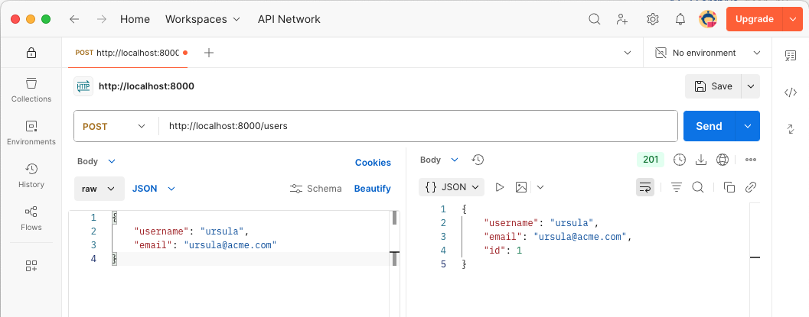
-
-
Obtener todos los usuarios:
-
Método:
GET -
Respuesta esperada: Lista de usuarios en formato JSON
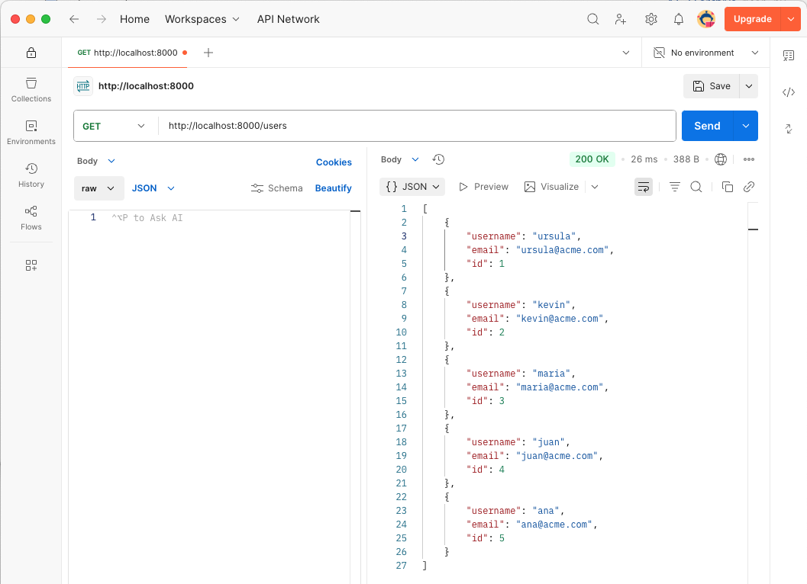
-
-
Crear una nueva categoría:
-
Método:
POST -
Cuerpo:
{"name": "Electrónica", "description": "Categoría de productos electrónicos", "parentId": null} -
Respuesta esperada:
{ "name": "Electrónica", "description": "Categoría de productos electrónicos", "parentId": null, "id": 1 }
-
-
Obtener todas las categorías:
-
Método:
GET -
Respuesta esperada: Lista de categorías en formato JSON

-
-
Crear un nuevo producto:
-
Método:
POST -
Cuerpo:
{ "name": "Laptop Dell", "description": "Laptop potente para trabajo", "price": 1200.0, "categoryId": "1" } -
Respuesta esperada:
{ "name": "Laptop Dell", "description": "Laptop potente para trabajo", "price": 1200.0, "categoryId": 1, "id": 1 }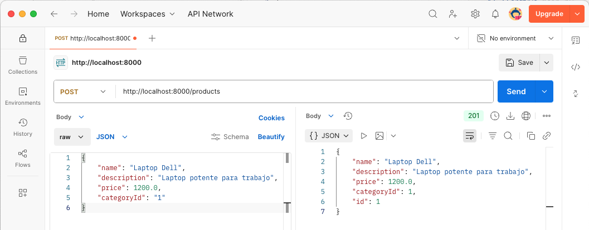
-
-
Obtener todos los productos de una categoría:
-
Método:
GET -
Respuesta esperada: Lista de productos en formato JSON

-
-
Añadir un comentario a un producto:
-
Método:
POST -
Cuerpo:
{ "rating": 5, "comment": "Excelente laptop, muy rápida", "productId": 1, "userId": 1 } -
Respuesta esperada:
{ "productId": 1, "userId": 1, "rating": 5.0, "comment": "Excelente laptop, muy rápida", "id": 1 }
-
-
Obtener los comentarios de un producto:
-
Método:
GET -
Respuesta esperada: Lista de comentarios en formato JSON
-
-
Actualizar un comentario:
-
Método:
PUT -
Cuerpo:
{ "productId": 1, "userId": 1, "rating": 4.0, "comment": "Muy buen producto, la batería dura bastante." } -
Respuesta esperada:
{ "productId": 1, "userId": 1, "rating": 4.0, "comment": "Muy buen producto, la batería dura bastante.", "id": 1 }
-
-
Eliminar un comentario:
-
Método:
DELETE -
Respuesta esperada: Devolverá un código de estado 204 (No Content) sin contenido en la respuesta, lo que indica que la operación se realizó correctamente.

-
-
Eliminar un producto:
-
Método:
DELETE -
URL:
http://localhost:8000/products/67e1a595567da5eeb6d61a2f -
Respuesta esperada: Devolverá un código de estado 204 (No Content) sin contenido en la respuesta, lo que indica que la operación se realizó correctamente.

Como la tabla de comentarios tiene una FOREIGN KEY que hace referencia a la tabla de productos, al eliminar un producto se eliminarán automáticamente todos los comentarios asociados a ese producto debido a la cláusula
ON DELETE CASCADEdefinida en la base de datos. Esto garantiza que no queden comentarios huérfanos en la base de datos después de eliminar un producto.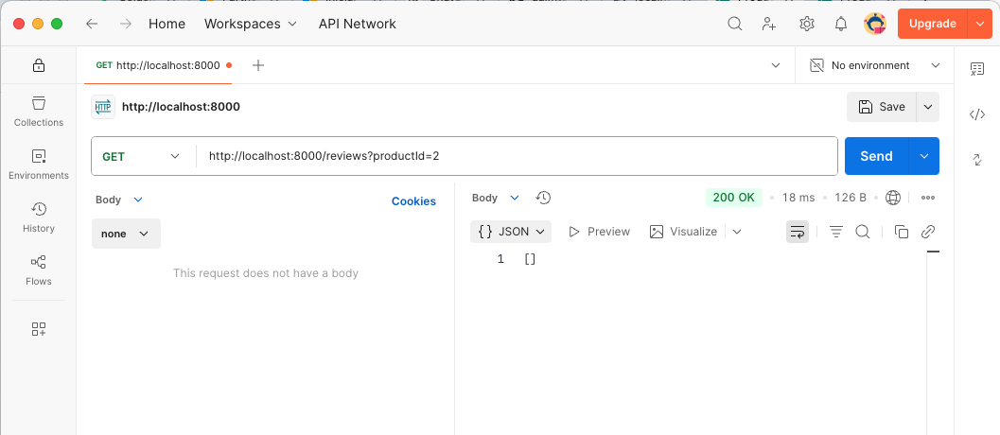
-
-
Eliminar una categoría:
-
Método:
DELETE -
Respuesta esperada: Devolverá un código de estado 204 (No Content) sin contenido en la respuesta, lo que indica que la operación se realizó correctamente. Al eliminar una categoría, no se eliminarán automáticamente los productos asociados a esa categoría, ya que la tabla de productos tiene una FOREIGN KEY con
ON DELETE SET NULLque establece el campocategoryIdaNULLen lugar de eliminar los productos. Esto permite conservar los productos incluso si su categoría es eliminada, aunque quedarán sin categoría asignada.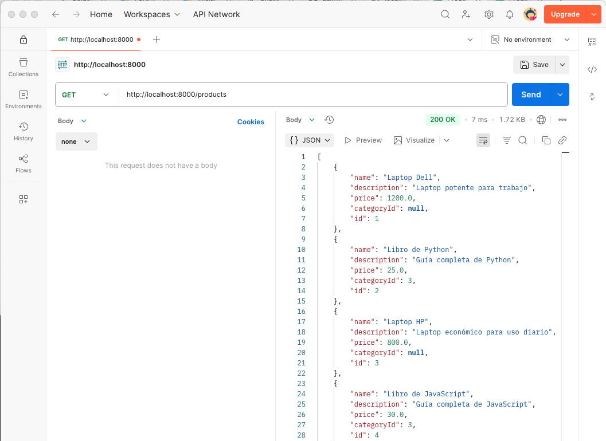
-
9. Documentación de la API
FastAPI proporciona una interfaz de documentación automática para la API REST, que se genera automáticamente a partir de los modelos de datos y las rutas definidas en la aplicación. La documentación de la API incluye información detallada sobre los endpoints, los parámetros de entrada, los códigos de respuesta y los modelos de datos utilizados. Esta documentación es muy útil para los desarrolladores que consumen la API, ya que les permite comprender rápidamente cómo interactuar con los diferentes endpoints y qué datos esperar en las respuestas. Además, la documentación de la API se actualiza automáticamente a medida que se modifican las rutas y los modelos de datos en la aplicación.
FastAPI utiliza Swagger UI y ReDoc para generar la documentación de la API. Swagger UI proporciona una interfaz interactiva para explorar y probar los endpoints de la API, mientras que ReDoc genera una documentación más legible y visualmente atractiva. Ambas interfaces son accesibles a través de un navegador web y permiten a los desarrolladores interactuar con la API de forma sencilla y eficiente.
Para acceder a la documentación de la API, abre un navegador web y navega a la URL http://localhost:8000/docs para Swagger UI o http://localhost:8000/redoc para ReDoc. A continuación se muestra la documentación de la API generada automáticamente para Swagger UI.

A continuación se muestra la documentación de la API generada automáticamente para ReDoc.

10. Conclusiones
En este tutorial, se ha desarrollado una API REST para la gestión de usuarios, productos, categorías y comentarios de una tienda en línea utilizando FastAPI y MySQL. A lo largo del proceso, hemos configurado un entorno de desarrollo con Docker y Docker Compose, implementado los endpoints necesarios para la API REST y probado la API con Postman.
MySQL es una excelente opción para almacenar datos estructurados, como se ha observado en los usuarios, productos, categorías y comentarios. La combinación de FastAPI y MySQL permite desarrollar aplicaciones web rápidas y eficientes con una arquitectura RESTful. Además, las características de validación de datos de Pydantic y la generación automática de documentación de FastAPI facilitan el desarrollo y la documentación de la API.
En este tutorial, la interacción con la base de datos se ha realizado directamente mediante sentencias SQL, lo que proporciona un control total sobre las consultas y la estructura de la base de datos. Sin embargo, también se podría considerar el uso de un ORM (Object-Relational Mapping) como SQLAlchemy para abstraer la interacción con la base de datos y facilitar el desarrollo de la API REST. SQLAlchemy permite definir modelos de datos como clases de Python y utilizar métodos para realizar operaciones CRUD (Crear, Leer, Actualizar, Eliminar) en lugar de escribir consultas SQL directamente. Esto puede mejorar la legibilidad del código y facilitar el mantenimiento a largo plazo de la aplicación. Sin embargo, en este tutorial se ha optado por utilizar sentencias SQL directas para proporcionar una comprensión más clara de cómo interactuar con la base de datos MySQL y para mantener el enfoque en el desarrollo de la API REST con FastAPI.
Este proyecto no sólo proporciona una solución funcional para la gestión de productos, categorías y comentarios, sino que también sirve como punto de partida para desarrollar aplicaciones web más complejas y escalables. Se pueden añadir más funcionalidades a la API, como la autenticación de usuarios, la gestión de pedidos y la integración con pasarelas de pago.
Anexo. Instrucciones de instalación
Para instalar y ejecutar la aplicación, sigue estos pasos:
-
Clona el repositorio:
git clone https://github.com/ualmtorres/FastAPIMySQLAPIProductosValoraciones.git cd FastAPIMySQLAPIProductosValoraciones -
Ejecuta Docker Compose para levantar los servicios:
docker-compose up -dSi necesitas volver a construir las imágenes de Docker (por ejemplo, si has realizado cambios en el archivo
Dockerfile), puedes usar el siguiente comando:docker-compose up -d --build -
Inicializa la base de datos con datos de prueba ejecutando el script
api/create_data.shque realiza llamadas a la API REST. -
Accede a la documentación de la API REST en
http://localhost:8000/docs(Swagger) ohttp://localhost:8000/redoc(Redoc). -
Accede a los endpoints de la API REST en
http://localhost:8000. -
Acceder a la aplicación de gestión en
http://localhost. -
Para detener los servicios, ejecuta el siguiente comando:
docker-compose down
Con estos pasos, tendrás el entorno de desarrollo configurado y funcionando la API REST y la aplicación de gestión.
Licencia
Licencia CC BY-NC-ND 4.0
Copyright (c) 2026 [Manuel Torres - Departamento de Informática - Universidad de Almería]
Este proyecto está licenciado bajo la Licencia CC BY-NC-ND 4.0. Esto significa que puedes compartir el proyecto siempre que cites al autor, no lo uses para fines comerciales y no realices obras derivadas.